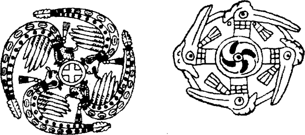

Kuzey Amerika Kızılderilileri arasında, kabilelerin avcı veya bitki yetiştiricisi olmasına göre iki zıt mitoloji görünmektedir. Öncelikle avcı olanların dinsel yaşamlarında bireyin hayaller görebilmek için oruç tutması üstünde durulur. On iki, on üç yaşlarındaki erkek çocuk babası tarafından ıssız bir yere bırakılır. Hayvanları uzak tutması için küçük bir ateş vardır ve çocuk orda oruç tutarak dua eder. Oruç ruhsal ziyaretçi gelene kadar üç veya daha fazla gün sürer ve insan veya hayvan biçiminde görünen ziyaretçi onunla konuşarak ona güç verir. Çocuğun daha sonraki yaşamı bu hayalle belirlenecektir; ona gelen ruh şaman olarak insanları sağaltma gücü verebilir, hayvanları yakalayıp avlama gücü verebilir veya savaşçılık yeteneği vermiş olabilir. Eğer kazanılan yetenekler gencin arzularını tatmin etmezse, tekrar, istediği kadar, oruç tutabilir. Yaşlı Crow kızılderilisi Mavi Boncuk bana böyle bir orucu anlatmıştı. “Çocukken” demişti, “zayıftım. Savaş çetelerinin önlerinde başkanları, geri dönüşlerini ve alayla geçişlerini görürdüm. Onları kıskanırdım ve oruç tutup onlar gibi olmaya karar v ermiştim. Hayali gördükten sonra özlediğime kavuşmuş olarak kalktım... sekiz düşman öldürdüm.”282 Eğer birinin şansı kötüyse olağanüstü gücün kendisine verdiği armağanın yetersiz olduğunu anlar. Öte yandan büyük şamanlar ve savaş önderleri oruç hayallerinden fazlasıyla güç almışlardır. Bazıları parmak boğumlarını kesip ruha adamış olabilir. Ova kızılderilileri arasında bu tür kurbanlar yaygındır. Bazı yaşlıların ellerinde ancak oku yerleştirip yay çekecek kadar parmak ve boğum kalmıştır.
Bitki yetiştiren kabilelerde -Hopi, Zuni ve öteki yerleşik Pueblolar- yaşam, maskeli tanrılarının zengin ve karmaşık törenleri çevresinde örgütlenir. Bunlar ayrıntılı ritlerdir; eğitim görmüş rahip dernekleri tarafından yönetilir, dinsel bir takvime göre gerçekleştirilir ve bütün topluluk bu törenlere katılır. Ruth Bénédict’in Kültür Biçimleri’nde gözlemlediği gibi: “Hiç bir etkinlik alanı ritler kadar ilgilerini çekemez. Batı Puebloların yetişkin erkekleri herhalde yaşamlarının büyük bölümünü bunlara ayırıyorlar. Bu törenler bizlerin eğitim görmemiş zihinlerimizi şaşırtan büyük miktarda ezberlenmiş söz, takvime bağlı olarak tam uyulması gereken birçok hareket ve değişik kültlerin karmaşasıyla gövdenin sonu gelmez biçimsel süreçlerden geçmesini gerektirir”.283 Böyle bir toplumda bireysel oyuna yer yoktur. Yalnız bireyin topluluğuyla ilişkilerinde katılık değil, topluluğun da takvim çevrimine katı bağlılığı vardır çünkü bitki yetiştiriciler öğelerin tanrılara bağımlılığı konusunda sağlam düşünceler geliştirmişlerdir. Kısa bir dönem fazla veya az yağmur yağması bütün bir yılın emeğini boşa çıkararak kıtlık sonucunu verebilir. Avcılara gelince, avcının şansı çok başka bir konudur.
Mısırın kökeniyle ilgili efsanede bir kızılderilinin hayal görmesiyle ilgili tipik bir örnek okuduk. Bu örneğin derlendiği Ojibway kabilesi, Schoolcraft aralarında yaşarken, kültürel düzey olarak yaklaşık İÖ 6000’de Yakındoğulu Natufianların düzeyindeydiler. Algonkin topluluğuna bağlı avcı ve savaşçı bir kabileydiler ve mitos ve masalları bitki yetiştiriciliği değil avcılık geleneğine bağlıydı. Fakat daha gelişmiş güneyli tarımcı halklardan mısır ekimi, hasatı ve hazırlanmasını yakın bir zamanda öğrenmişlerdi ve avlarına destek olmak üzere ondan da yararlanıyorlardı. Mısırla birlikte, ilk kez Endonezya’nın yamyamları arasında karşılaştığımız ve hindistan ceviziyle Pasifiği geçtiğini gördüğümüz mucizevi bitki -Dema’nın mitosu da gelmişti. Güney Amerika’da bu mitos yüzlerce kabile tarafından verimli kıtanın birçok bitkisine uyarlanmıştır. Kuzey Amerika’da da, mitosun yalnızca mısırın yaprak ve püsküllerine değil fakat başka bir mitolojik düşünce yapısına, düş görmeye uyarlanmış olduğunu görüyoruz. Bu masalda mitolojik çağın ‘insanları’ değil yalnızca tek başına bir genç var, Eskimo şaman Igjugarjuk’un anlatmış olduğu gibi, ‘insanın zihnini başkalarına kapalı kalan her şeye açabilen” o büyük yalnızlıkta kendi düşsel isteği peşinde olan bir genç.
İki dünya arasındaki zıtlık rahip ve şamanın karşılaştırılmasıyla daha da açık görülebilir. Rahip, kabul edilmiş dinsel bir örgütün toplumsal biçimde törenle üyeliğine aldığı, belirli mevkiler kazanan ve kendisinden öncekiler tarafından da kullanılan bir büronun kiracısıymış gibi davranan biriyken, şaman kişisel psikolojik bir bunalım sonucu kendi başına güçler kazanan biridir. Düşünde ona görünen ruhsal ziyaretçiler daha önce kimse tarafından görülmemiştir; onlar onun ruhları ve koruyucusudurlar. Oysa Puebloların maskeli tanrıları, katı biçimde örgütlenmiş ve düzenlenmiş rahipler tarafından tapınılan mısır-tanrıları, bulut-tanrıları, bütün köyün bilinen efendileridir ve bilinmedik zamanlardan beri onlara dua edilmekte ve törensel danslarda temsil edilmektedirler.
Meksikalı Jicarilla Apaçi kızılderililerinin köken masalında, avcı kabilenin şamanizminde görülen dinsel biçemin, daha istikrarlı, toplumsal olarak örgütlenmiş ve rahip sınıfı tarafından yürütülen bitki yetiştirici toplumun gücü etkisinde kalışının mükemmel bir örneği var. Apaçiler, kuzenleri Navaholar gibi, avcı kabileyken İS on dördüncü yüzyılda mısır yetiştiricisi Puebloların bölgesine girdiler ve karakteristik uyarlamalarla yerel neolitik edebiyatın büyük bölümünü özümlediler.284 İnceleyeceğimiz mitos evrenin yapısı ve tarihi kavramları açısından temeldir ve açıkça bitki yetiştiricisi kültürün ritleri ve toplumsal düzeniyle ilgili güneyden alınmış bir türevdir. Göreceğimiz gibi bireyin, kendi vahşi zekâsının kendisini alıp götüreceği uçuşlarını engelleyerek, katı biçimde tabakalanmış, kurallara bağlı bir toplumsal bağlamla bütünleştirilmesiyle daha çok ilgilenmektedir.
“Başlangıçta dünyanın şimdi durduğu yerde hiç birşey yoktu” diye başlıyor, “yalnızca Karanlık, Su ve Kasırga vardı. Yalnızca Hactcinler mevcuttu. Issız bir yerdi. Balık yoktu, canlı yaratık yoktu. Fakat bütün Hactcinler başından beri burdaydılar. Herşeyin kendisinden yaratıldığı maddeye sahiptiler. Önce dünyayı yaptılar, yeraltıyla birlikte sonra gökyüzünü. Dünyayı canlı bir kadın biçiminde yaptılar ve ona Anne dediler. Gökyüzünü erkek biçiminde yaptılar ve ona Baba dediler. Erkeğin yüzü yere, kadının yüzü göğe dönüktü. Erkek babamız ve kadın annemizdir”.285
Hactcinler Apaçilerin, Pueblo köylerinin maskeli tanrılarına tekabül eden varlıklarıdır, doğanın davranışlarını destekleyen güçlerin kişileştirilmiş halleridir. İçlerinden en güçlü olanı, Kara Hactcin -mitos devam ediyor- çamurdan bir hayvan yaptı ve onunla konuştu. “Dört ayağın üstünde nasıl yürüyeceğini bana göster” dedi ve o da yürüdü. Hactcin “çok iyi” dedi, “seni görebiliyorum”. Sonra “Fakat sen yalnızsın. Gövdenden başkalarının çıkmasını sağlayacağım” dedi. Sonra o tek gövdeden her türlü hayvan ortaya çıktı; çünkü Kara Hactcin’in gücü vardı, ne istese yapabilirdi. O zamanlar bütün hayvanlar konuşabilirlerdi ve Jicarilla Apaçe dilini konuşurlardı.
Dünyanın yaratıcısı Kara Hactcin elini kaldırdı ve avucuna bir damla yağmur düştü. Bunu toprakla karıştırıp çamur yaptı. Bu çamurdan kuş yaptı. “Bu kanatlarla nasıl uçacaksın bana göster” dedi. Çamur kuş oldu ve uçtu. “Çok iyi” dedi Kara Hactcin, bununla dört ayaklı arasındaki fark hoşuna gitti. “Fakat arkadaşlara gereksinmen var sanırım” dedi. Sonra kuşu aldı onu saat yönünde hızla çevirdi. Kuşun başı döndü ve başı dönen biri gibi birçok şekil gördü. Her türlü kuşu, kartallar, şahinler ve küçük kuşları gördü ve kendisine geldiğinde bu kuşların hepsi gerçekten oradaydılar. Ve kuşlar havayı severler, yükseklerde yaşarlar, pek yere inmezler; çünkü ilk kuşun yaratıldığı çamuru yapan damla gökyüzünden düşmüştü.
Kuşun saat yönünde dönmesiyle öteki kuşların yaratılması sahnesi Mezopotamya yüksek neolitik çağının ilk Samarra çömleklerindeki desenleri (İÖ y. 4500-3500)286 çağrıştırıyor. Bu desenlerde hayvan ve kuşların biçimleri dönen svastika oluşturur ve benzer desenlerin -aşağıdaki şekildeki gibi- tarih öncesi Kuzey Amerika yığma tepe kalıntılarında veya bugünkü Güneybatı kızılderililerinin -Pueblolar, Navaholar ve Apaçiler- ritüel yaşam ve simgeleri arasında svastikanın önemli bir yer tutması elbette yalnızca tesadüf veya koşut gelişim olamaz. Bu durum bize geniş kültürel yayılmayla ilgili ek kanıtlar vermekle kalmıyor, svastikanın en eski neolitik sanat ve kült içindeki hem Eskidünya hem de Yenidünya’daki anlamıyla ilgili ipucu da veriyor.
Yaratıcı kuşu saat yönünde çevirdi ve sonuç olarak ortaya düşsel biçimler çıktı. Svastikalar birçok Çin işinde saat yönünün tersine görünür ve tefekkür halindeki Buda’yı gösterirler.

Denizkabuğu gerdanlıklardan desenler, Spiro Mound, Oklahoma
Buda bildiğimiz gibi, bilincini bu düşsel, yaratılmış biçimlerin sahasından uzaklaştırarak yoga uygulamalarıyla her şeyin kaynaklandığı temel derinlik ya da ‘boşluk’la birleştirir.
Yıldızlar, karanlık, bir kuzu, bir hayal, çiğ tanesi, köpük,
Bir düş, yıldırım çakması veya bir bulut:
Dünyayı böyle görmeli insan.287
Doğu düşüncesi üstünde büyük etkisi bulunan ünlü Budist metin Elmas-Kesen-Sutra’da okuyoruz bunları.
Apaçi mitolojisinde Budist etki bulunduğunu önermeyeceğim. Yoktu! Fakat büyük İspanyol oyun yazarı Calderón’un La Vida es Sueño (Yaşam Düştür) yapıtında ifade ettiği dokunaklı düşünce, veya çağdaşı Shakespeare’in
Bizler yalnızca
Düşlerin yapıldığı maddedeniz ve bizim küçük yaşamlarımız
Uykuda dolaşmaktır2886
diye yazması, Hindu filozofların geleneklerinin en eski aşamasında temel konulardır. Eğer İndus Vadisinin antik kalıntıları arasında bulunmuş İÖ 2000’den kalma yoga duruşlu küçük figürlerin sağladığı kanıtları dikkate alırsak bu transa geçme yöntemi en eski Hint rahip-şehir devletlerinde geliştirilmiş olmalıdır. Hindu ilahı Vişnu’ya ait en tanınmış formlardan biri onu kozmik yılanın halkaları üstünde uyurken ve kozmik denizde yüzüp, hepimizin parçası olduğu evrenin lotus-düşünü görürken gösterir. Yani burda önerdiğim, bu kuşun yaradılı-şıyla ilgili Apaçe efsanesi Kızılderili akrabaların aynı neolitik yapıdan türettikleri bir form olmalıdır. Ve iki durumda da svastika simgesi dönüşüm sürecini temsil eder: hayal uyandırmak (Hactcin örneği) veya hayalden uyandırmak (Buda örneği). Formlarının uçucu niteliği nedeniyle gerçekte zaten bir hayal veya düşle karşılaştırılabilecek olan evrenin hayalidir bunlar.
Ve işte, bütün kuşlar yaratıcıları Kara Hactcin’e gelerek sordular “Ne yiyeceğiz?” Yaratıcı elini dört yana da kaldırdı ve çok fazla gücü olduğu için her türlü tohum eline düştü ve o da onları dağıttı. Kuşlar tohumları yemeye gittiler ama hepsi böceklere, solucanlara, çekirgelere döndü ve her yana hareket edip sıçramaya başladılar. Kuşlar önce onları yakalayamadı. Hactcin onları kışkırtmak istiyordu, “Ah evet, şu sinekleri, çekirgeleri yakalamak zor ama siz yapabilirsiniz”. Onlar da çevredeki çekirgelerin, böceklerin peşine düştüler ve bugün de bunu yapmalarının nedeni budur.
Bütün kuşlar ve hayvanlar Kara Hactcin’e gelerek arkadaş istediklerini söylediler, insanı istiyorlardı. “Sen her zaman bizimle olmayacaksın” dediler. O da, “Sanırım bu doğru. Belki de bir gün kimsenin beni göremeyeceği bir yere giderim” dedi. Böylece onlara her yandan malzeme getirmelerini söyledi. Her türlü bitkiden tohum getirdiler, kırmızı boya, beyaz çamur, beyaz taş, kara kehribar, firuze, kırmızı taş, opal, denizkulağı ve çeşitli değerli taşlar eklediler. Bunları Kara Hactcin’in önüne koyunca, onlara çekilmelerini söyledi. Önce doğuya, sonra güneye, sonra batıya, sonra kuzeye döndü. Çiçek tozlarından, toprağa, aynı kendisine benzeyen bir şeklin dış hatlarını çizdi. Sonra değerli taşları ve öteki nesneleri bu çizginin içine yerleştirdi ve onlar et ve kemik oldular. Damarlar firuzeden, kan kırmızı boyadan, deri mercandan, kemikler beyaz kayadan, tırnaklar Meksika opalinden, gözbebekleri kara kehribardan, gözlerin beyazları denizkulağından, kemik ilikleri beyaz çamurdan ve dişler de opaldendi. Kara bir bulut alarak ondan da saç yaptı. Yaşlandığınızda bu beyaz bulut olur.
Hactcin bu şeklin içine rüzgâr yolladı ve onu canlandırdı. Parmaklarımızın ucundaki yuvarlak çizgiler yaradılış anındaki bu rüzgârın yönünü gösterirler. Ve insan ölünce rüzgâr ayak tabanlarından çıkıp onu terkeder; ayak tabanlarındaki çizgiler içerdeki rüzgârın yolunu gösterir. İnsan yüzüstü, kolları yana açılmış yatıyordu; kuşlar bakmaya çalıştılar fakat Kara Hactcin izin vermedi. Artık insan canlanıyordu. İnsan kollarına dayanıp kalkarken Hactcin çok heyecanlanan kuşlara “Bakmayın” dedi. Kuşların ve hayvanların çok bakmak istemelerinden dolayı bugün insanlar çok meraklıdırlar, aynı sizin öykünün sonunu merak etmeniz gibi.
Hactcin insana “Otur” dedi ve ona konuşmayı, gülmeyi, bağırmayı, yürümeyi, koşmayı öğretti. Kuşlar olanları görünce bir ötüş koyverdiler, şimdi kuşluk zamanı yaptıkları gibi.
Hayvanlar insanın arkadaşa gereksinimi olduğunu düşündüler ve Kara Hactcin insanı uyuttu. İnsan gözleri kapandığında düş görmeye başladı. Birinin, bir kızın yanında oturduğunu gördü. Uyandığında yanında bir kadın oturuyordu. Onunla konuştu, o da konuştu. O güldü, o da güldü. “Kalkalım” dedi ve birlikte kalktılar. “Yürüyelim” dedi ve ona ilk dört adımını attırdı, sağ, sol, sağ, sol. “Koş” dedi ve birlikte koştular. Ve kuşlar gene ötüşmeye başladılar; ikisinin hoş bir müziği oldu ve yalnızlık duymadılar.
Bütün bunlar dünyanın şimdi bizim yaşadığımız yerinde olmadı; aşağıda, toprağın rahminde oldu. Karanlıktı ve o zaman ne güneş ne ay vardı. Ak ve Kara Hactcin çantalarından küçük bir güneş ve küçük bir ay çıkardılar, onları büyüttüler ve gökyüzüne yolladılar. Işıklar saçarak biri kuzeye biri güneye gitti. Bu halk -hayvanlar, kuşlar ve insanlar- arasında büyük heyecan yarattı. Fakat o zaman birçok şaman vardı, herşey üstünde güç sahibi olduğunu iddia eden kadın, erkek birçok şaman. Bunlar güneşin kuzeyden güneye gittiğini gördüler ve konuşmaya başladılar.
Biri “Güneşi ben yaptım” dedi, öteki “Hayır, ben”, kavgaya başladılar. Hactcin onlara böyle konuşmamalarını emretti fakat bu tür iddialara ve kavgaya devam ettiler. Biri “Güneşi baş aşağı çevireyim, gece olmasın. Ama yok, bırakayım gitsin. Dinlenip uyuyacak zamana gereksinmemiz var” derken bir başkası “Aydan kurtulmak gerekir. Gece ışığa gereksinmemiz yok” diye konuşuyordu. Fakat güneş ikinci gün doğdu ve kuşlarla hayvanlar sevindi. Ertesi gün aynısı oldu. Dördüncü günün öğlesi olduğunda şamanlar, Hactcin’in sözlerine karşın konuşmayı sürdürdüler ve tutulma oldu. Güneş baş aşağı bir çukura girdi ve ay da onu izledi. Bugün de tutulmaların olması bu nedenden.
Hactcinlerden biri şamanlara “Tamam, gücünüz olduğunu söylüyordunuz, şimdi güneşi geri getirin” dedi.
Hepsi sıraya girdiler. Birinde şamanlar, bir başkasında bütün kuşlar ve hayvanlar vardı. Şamanlar şarkılar söylemeye, ayinler yapmaya başladılar. Bildikleri herşeyi ortaya döktüler. Bazıları oturup şarkı söylüyor, sonra yalnız dışarı çıkan gözlerini bırakarak toprağın içinde kayboluyor ve gene geri geliyordu. Ama bütün bunlar güneşi geri getirmedi. Yalnızca güçleri olduğunu göstermeye yaradı. Bazıları ok yutuyor, midelerinden çıkarıyordu. Bazıları tüy, bazıları bütün bir ladin ağacını yutuyor ve tekrar tükürüp çıkarıyorlardı. Ama güneş ve ay hala ortada yoktu.
Sonra Ak Hactcin “Hepiniz büyük işler beceriyorsunuz ama güneşi geri getirebileceğiniz yok. Zamanınız doldu” dedi. Kuşlara ve hayvanlara döndü, “Şimdi sıra sizde”.
Hepsi kayınbiraderlermiş gibi birbirleriyle nazik nazik konuşmaya başladılar fakat Hactcin “Birbirinizle kibarca konuşmaktan daha çok şeyler yapmalısınız. Gücünüzü kullanın da güneşi geri getirin” dedi.
Şansını ilk çekirge deneyecekti. Elini dört yönde ileri doğru uzattı ve geri çektğinde elinde ekmek vardı. Geyik elini dört yönde ileri doğru uzattı ve geri çektiğinde elinde avizeağacı meyvası vardı. Ayı aynı yolla yabani kiraz, domuz kabuksuz yemişler, sincap çilek, hindi mısır üretti ve hepsi böyle şeyler yaptı. Hactcin’in bu armağanlardan hoşnut olmasına karşın güneş ve ay hala ortada yoktu.
Böylelikle Hactcinler kendileri birşeyler yapmaya başladılar. Dört yönden dört renkli gök gürültüleri gönderdiler ve bu gürlemeler yağmur boşanan dört renkli bulut gelirdi. Sonra, insanların ürettiği bitkiler dikilirken ortalığı güzelleştirmek için gökkuşağı yaptılar. Hactcinler bir sıra halinde boyalı kumlardan dört küçük renkli tümsek yaptılar ve tohumları bunların içine koydular. Kuşlar ve hayvanlar şarkılar söyledi ve tümsekler büyümeye, tohumlar fışkırmaya, renkli dört tümsek toprakla karışıp dağ haline gelmeye başladı, yükseldikçe yükseldi.
Hactcinler büyülerinde özellikle başarılı olan on iki şaman seçtiler ve altısını baştan aşağı maviye boyadılar; bunlar yaz mevsimini temsil ediyorlardı. Altısı da beyaza boyandı, kışı temsil ediyorlardı. Onlara Tsanati adını verdiler. Jicarilla Apaçilerinin Tsanati dans derneğinin kökeni budur. Bundan sonra Hactcinler altı soytarı yaptılar, onları beyaza boyayarak, biri yüzlerinde, biri göğüslerinde, biri kollarının üst, öteki alt bölümlerinde dört yatay kara çizgi çektiler. Sonra Tsanati ve soytarılar dağı büyütmek için insanların dansına karıştılar.289
Şamanların paleolitik büyü uygulamalarıyla bireysel olarak, topluluk temeline dayalı, görece daha karmaşık bitki yetiştirici toplum tarafından küçük düşürülmesinin daha açık ifadesi bulunamaz. Sıraya sokulup, üniforma giydirilip, toplumun geniş kesimi arasına, toplu ayin yapışına dahil ediliyorlar. Öykü toplumsal tabana sahip rahipliğin, bireyin doğuştan gelen tehlikeli ve önceden bilinemez güçleri üstündeki zaferini böyle dde getiriyor. Öyküyü anlatan Jicarilla Apaçi de şamanların ayin düzenine dahil edilmesinin zorunluluğunu açıklamaktadır. “Bu insanlar” demektedir, “çeşitli kaynaklardan, hayvanlardan, ateşten, hindiden, kurbağalardan ve başka şeylerden aldıkları kendi ayinlerine sahipti. Dışarıda bırakılamazlardı. Güçleri vardı ve onların da yardımcı olması gerekirdi”.290
Eskidünya’nın neolitik toprağa bağlı köylerinin, dünyanın yaşanabilir bölgelerini yavaş yavaş fethedip gücünü hissettirmeye başladığında ortaya çıkmış olması gereken bunalımı daha açık ifade eden bir başka mitos bilmiyorum. Amerika bulunduğunda Arizona ve New Mexico’daki kültürel durum, Yakındoğu ve Ortadoğu’da ve Avrupa’da İÖ dördüncü ve ikinci bin yıllar arasında olabileceği gibiydi; yerleşik bir yaşamın katı kurallarının avcılığın özgür ve hareketli insanlarına dayatılmakta olduğu bir dönem yaşanmaktaydı. Eğer Hindu, İran, Yunan, Kelt ve Germenlerin mitolojilerine bakarsak, ünlenmiş, sık sık anlatılan masallarında tanrıların titanları alt etmeleriyle, Hactcinlerin şamanlara boyun eğdirmeleri arasındaki benzerliği tanıyabiliriz. Titanlar, cüceler ve devler daha eski bir mitolojik çağın güçleri olarak görülmektedir. Semavi düzenleri doğa ve insan dünyalarını uyum içinde tutan sevimli tanrılara karşılık onlar kaba, soytarı gibi, bencil ve kuralsızdırlar. Devler alaşağı edilmiş, dağların altına kapatılmış, dünyanın ucundaki dağlık bölgelere sürülmüştür ve Tanrıların gücü onları oralarda tutmaya yettikçe insanlar, hayvanlar, kuşlar ve bütün canlılar yasayla yönetilen bir dünyanın kıymetini, hayrını görecektir.
Kutsal Hindu kitaplarında sık rastlanılan bir mitos vardır. Tanrılar ve titanlar, iki yüce ilah Vişnu ve Şiva’nın gözetimi altında Samanyolunu yayıkta dövüp yağını çıkarmak için işbirliği yaparlar. Dünya Dağını yayık sopası yapar, Dünya Yılanını çevirme ipi yapar ve yılanı dağa sararlar. Sonra Vişnu Dünya Dağını tutarken, Tanrılar yılanın başından, cinler kuyruğundan tutar ve bin yıl çevirirler. Sonunda Ölümsüzlük Yağını yaparlar.291
Kavgacı şamanların, sıradan insanların, Apaçi Hactcin gözetiminde Dünya Dağı’nı büyütmek ve ışık dünyasına yükseltmek için gösterdikleri çabayı okuyunca bu mitosu anımsamamak olanaksız. Tsanati ve soytarılar, insanların dansına katılarak dağın yükselmesine katkıda bulunmaktadırlar. Dağ tepesi güneş ve ayın kaybolduğu deliğe ulaşana kadar büyür, artık şimdiki dünyamızın yüzüne çıkmak için yalnızca dört renk ışığından dört basamak yapmak kalmıştır. Altı soytarı önden giderek büyüsel kırbaçlarıyla hastalıkları kovaladılar, onların peşinden Hactcinler ve sonra Tsanatiler çıktı. Sonra da insanlar ve hayvanlar. Öyküyü anlatan “Dünya yüzüne çıkmaları aynı bir bebeğin annesinden doğması gibiydi” diyor, “Çıktıkları yer dünyanın rahmiydi”.292
Tarımcı toplumların toplumsal örgütlerinin, ahlak düzenlerinin, törenlerinin ve mitolojilerinin en büyük endişesi bireyciliğin görünümlerini bastırmak olmuştur. Bu genellikle insanları kendi çıkarları, istekleri ve deneyim kipleriyle değil, toplum egemenliğinde geliştirilip yaşatılan duygusal düzen ve davranış kalıplarıyla hareket etmeye ikna ederek veya zorlayarak yapılmıştır. Bitkiden çıkartılan ders, bireyi yalnızca bir hücre veya daha büyük bir sürecin bir anı -bir soyun, ırkın veya daha geniş ifadeyle bir türün parçası- olarak gören bakış açısı, kişisel kendiliğindenliği, kendini keşfetmenin her dürtüsünü yok edecek kadar değersizleştirir. “Size tam gerçeği söylüyorum: Buğday tanesi yere düşüp ölmezse, o yalnız kalır; fakat ölürse, çok mahsul verir.”293 Bu soylu düstur kutsal toplumun bağlayıcı kavrayışını temsil eder yani yalnız kalmak istemeyenlerin militan, acı çeken ve muzaffer kilisesini.
Fakat öte yandan daima yalnız kalmak isteyenler olmuştur ve bazan gerçekten bu yalnızlıkta Büyük Ruh, Güç ve Büyük Gizin gruptan saklı kalan somut gücünün içsel etkisinin içlerinde doğduğunu görmüşlerdir. Kendi kuyruğunu ısıran, eski derisini atan, derisi yenilenip gene atılan yılanın sonsuz dairesi -genellikle küçümsemeyle- zamanın ötesindeki normal üstü sonsuzluk deneyimiyle fırlatılıp atılmıştır. Kartal gibi ruh kendi kanatlarıyla süzülmektedir. Nietzsche’nin ahlak yasasının toplumsal uydurmalığına verdiği adla ‘Yapacaksın’ ejderi, kendini keşfeden aslan tarafından öldürülmüştür ve efendi –Budist’lerin ifadesiyle- aslan gibi kükremektedir: dağ zirvelerinin, sonsuz ufukların ve dipsiz uçurumların büyük şamanının kükremesidir bu.
Paleolitik avcı dünyasında gruplar görece küçük -kırk, elli kişiden pek fazla değil- ve toplumsal baskı, daha sonraki daha büyük, farklılaşmış, sistematik olarak örgütlenmiş köy ve şehirlerinkine göre çok daha azdı. Grubun çıkarı dürtülerin bastırılmasından çok desteklenmesindeydi. Ojibway babanın oğlunu ilk orucun yalnızlığına yani kendini keşfetme, yalın boşluk türbesine, bulunacak olan tanrının imge ve kavramı hakkında hiçbir toplumsal güvence yokken nasıl bıraktığını ve oğlunun varacağı sonucu onun kendi kutsal yolu olarak kabul etme ve saygı gösterme konusunda nasıl mükemmel bir anlayış içinde olduğunu okuduk. Ve bitki yetiştiricilerin maskeli tanrılarının nasıl herseyi kendi rahiplerince oluşturulmuş dünya-toplumunun kıskacına aldığını da okuduk. Şamanların kendi deneyimlerinin çeşitli kaynaklarından çıkarttığı kendi ‘törenlerini’ mutlak olarak küçük görüp en son ilke olarak grubun gücünü ileri sürerler.
Avcıların mitolojileriyle bitki yetiştiricilerin mitolojileri arasındaki ilk ayrımımız buradadır. Bitki yetiştiricilerin ritlerinde vurgu grup üstündeyken avcılarınki bireydedir -elbette onlarda da grup tamamıyla yok olmamaktadır. Avcılar için de halk vardı; kıymetli halk- birbirine kayınbiraderler gibi nazikçe selam vermektedir fakat görece kişisel güçleri daha azdır. Bu düzeyde bile çok daha güçlü şamanların ayrıştığı bir grup oluştururlar. Eskimo şaman Najagneq’in bütün köyüne karşı savaş verdiğini ve mahkemeye onu suçlamaya geldiklerinde hepsini utandırdığını okumuştuk. Daha ilkel Karibu Eskimo şaman Igjugarjuk’un evlenmek istediği kızı bulunca basitçe tüfeğini aldığını, kızın ailesini vurduğunu ve kızı evine getirdiğini de okuduk. Bitki yetiştiricilerin köy ve kasabalarında grubun yaşamını sürdürmesine en çok yardımcı olan grubun kavrayış sistemini mükemmel biçimde temsil eden arketip grup felsefesi -toprağa düşüp ölen fakat böylece yaşam veren buğday tanesi, canavar yılan ve kurban edilen kız ritlerinde görünen felsefe ve grup önde gelmektedir. Avcı dünyasında grup, kendi yolunu kendi biçimiyle bulan bir insanı yüz geri edebilecek kadar büyük ve güçlü olmamıştır; egemen olan felsefe daha çok ‘aslan kükremesi’dir.
Görmüş olduğumuz gibi bazı bölgelerde (örnek olarak Kuzey Amerika’da) bu şamancı, bireyci ilke, erginleşme ritlerinin bile kişisel olarak düş görmeyi ana tema edindiği bir yapı kazandığı boyuta varmıştır. Bazı bölgelerde (örnek olarak bitki yetiştirici Malenezya dünyasının güçlü etkilerinin özümlendiği Orta Avustralya’da)294 atalar çağına ve erkeklerin dans alanındaki disiplinlerine verilen önem bireye fazla hareket alanı bırakmamaktadır. Gene de, ana kural olarak av dünyasında şaman ilkesinin geçerli olduğu ve sonuç olarak mitolojik ve ritüel yaşamın bitki yetiştiricilerine göre o kadar zengin olmadığı söylenebilir. Daha hafif, oynak bir niteliği vardır ve ilahlarının çoğu gelişmiş tanrılar olmaktan çok kişisel ruhlardır. Ama gene de, gördüğümüz gibi, tundraların ıssızlığında insan zihninin ulaştığı derinlikler, havada çurungaların vızladığı, korkulu grup coşkunluklarını aşmaktadır.
Yüzyılımızın ilk on yılında Kızılderililerin Kitabı için malzeme toplayan Natalie Curtis’e Oglalla Siularının şeflerinden Şef Düz Demir Parçası “Bütün güç Büyük Giz Wakan-Tanka’dan gelir” diye anlatmıştı.
“Kutsal İnsanın zekâsı, sağaltma gücü ve kutsal büyüler yapma yeteneği Wakan-Tanka’dan gelir. İnsan bütün sağaltıcı bitkileri Wakan-Tanka’nın verdiğini, onların kutsal olduklarını bilir. Bizon da kutsaldır, çünkü o da Wakan-Tanka’nın armağanıdır. Büyük Giz insanlara yiyeceklerini, giyeceklerini ve tüm zenginlikleri vermiştir. Ve insana bu armağanları kullanması için akıl da vermiştir; sağaltıcı bitkileri bulmayı, bizonu kuşatıp avlamayı ve bilgi edinmeyi öğretmiştir. Her şey Wakan-Tanka’dan gelir, her şey.
Kutsal İnsana kutsal olacağının bilgisi gençken gelir. Büyük giz bunu öğretir. Bazen de söyleyenler Ruhlardır. Ruhlar yalnız uykuda gelmezler, uyanıkken de gelirler. Ruh gelince orada bir insan duruyormuş gibi görünür, fakat bu adam konuşup yürüdü mü kimse onun gidip gitmediğini söyleyemez. Ruhlar böyledir. Kutsal İnsan Ruhlarla her zaman buluşabilir ve ona kutsal şeyler öğretirler.
Kutsal İnsan tek başına bir tipiye gider ve oruç tutup dua eder. Veya tek başına ıssız tepelere gider. İnsanların arasına döndüğünde onlara Büyük Gizin söylemesini emrettiklerini söyleyip öğretir. Öğütler verir, hastaları sağaltır ve insanları kötülüklerden koruyan kutsal büyüler yapar. O’nun gücü büyüktür ve çok saygı görür; tipideki yeri de onurlu bir yerdir.”295
Knud Rasmussen, Karibu Eskimosu şaman Igjugarjuk’tan şamanlık gücünü nasıl kazandığının bütün macerasını dinlemiştir. Igjugarjuk gençken sürekli olarak anlam veremediği düşler görüyordu.
“Garip, bilinmedik yaratıklar gelip onunla konuşuyordu ve uyandığında düşlerindeki hayalleri o kadar açık görebiliyordu ki arkadaşlarına hepsini anlatabiliyordu. Çok geçmeden onun kaderinin angakoq (şaman) olmak olduğu anlaşıldı ve Parqanaoq adlı yaşlı biri onun hocası oldu. Kışın ortasında, soğuğun en şiddetli olduğu zamanda Igjugarjuk ancak oturabileceği kadar büyüklükte bir kızağa konularak evinden uzağa Hikoligjuag’ın öte yanına götürüldü. Belirlenen noktaya geldiklerinde o kızakta otururken hocası ona, ancak bağdaş kurup oturarak sığabileceği küçük bir kardan-kulübe yaptı. Kara basmasına izin verilmedi, kızaktan kaldırılarak halı yerine ancak oturmasına yetecek bir derinin bulunduğu kulübeye taşındı. Yiyecek ve içecek bırakılmamıştı, yalnızca Büyük Ruhu ve ona görünecek olan yardımcı ruhu düşünmesi söylenmişti -böylece tefekküre dalması için yalnız bırakıldı.
Beş gün geçtikten sonra hocası ona bir içimlik ılık su getirdi ve aynı emirlerle onu eskisi gibi bıraktı. On beş gün sonra gene bir parça su ve biraz et getirildi, bunlarla bir on gün daha geçirecekti. Bu sürenin sonunda hocası gelip onu eve götürdü. Igjugarjuk bu otuz günlük soğuk ve orucun acısının çok büyük olduğunu, “bazen biraz öldüğünü” söylüyor. Bu zaman içinde yalnız Büyük Ruhu düşündü ve bütün insanların ve herşeyin anısını zihninden uzaklaştırmaya çalıştı. Otuz günün sonuna doğru yardımcı ruh ona kadın biçiminde geldi. Kadın o uykudayken geldi ve sanki üstünde havada dolaşıyordu. Artık düşlerinde onu görmedi fakat onun yardımcı ruhu o olmuştu. Bu sınama döneminden sonraki beş ay boyunca çok sıkı bir perhiz yaptı ve kesinlikle kadınlara yaklaşmaktan kaçındı. Sonra oruç tekrarlandı; aralıklarla bu tür oruçtan tekrarlamak gizli şeylerin bilgisini edinmek için en iyi yoldur. Gerçekten çalışma döneminin sonu yoktur, insanın ne kadar acı çekebileceğine ve ne kadar öğrenme merakı olduğuna bağlıdır.”296
Kadınlar da şaman olurlar. Aynı Eskimo topluluğunda Dr. Rasmussen’in “çok zeki, iyiliksever, temiz ve hoş görünüşlü, içten ve çekinmeden konuşan” diye anlattığı “halen genç bir kadın” olan Kinalik de vardı:
“Igjugarjuk onun kayınbiraderiydi ve büyü hocası da o olmuştu. Onun giriş sınavı çok çetindi. Kara dikilmiş çadır direklerine asılmış ve beş gün öyle bırakılmıştı. Kışın ortasıydı, çok soğuktu ve sık sık tipi yağıyordu fakat soğuğu hissetmedi çünkü ruh onu koruyordu. Beş gün sona erince indirilip eve götürüldü ve onu vurması için Igjugarjuk çağrıldı. Böylece ölüm hayalleriyle doğaüstüyle yakınlık kuracaktı. Tüfek gerçek barutla doldurulacak fakat kurşun yerine taş mermi kullanılacaktı; dünyayla bağının koparılmaması gerekiyordu. Igjugarjuk toplanan köylülerin gözü önünde ona ateş etti ve Kinalik bilinçsiz yere düştü. Ertesi sabah, Igjugarjuk onu yaşama döndürmek üzereyken o kendi kendine yardımsız ayıldı. Igjugarjuk kalbine nişan almadığını ve taşın daha sonra çıkartıldığını, kızın yaşlı annesinde olduğunu söylüyor”.297
İnsan, ıssızlığın Aziz Anthonyleri hoşgörüsüz gençliklerinde gerçekten acı çekmiş olsalar da, geçirdikleri sınavları anlatırken kantarın topuzunu kaçırdıkları veya düş ülkesinin olaylarıyla günlük olayları birbirine karıştırdıkları izlenimine kapılıyor. Rasmussen’in öteki Eskimo şamanı Najagneq’in on kez ölüp dirildiğini duyduk.298 Aynı toplulukta adı Aggjartoq olan ve şamanlık yapan bir genç daha vardı ve Dr. Rasmussen en ufak bir gülümseme işareti olmadan “o da Igjugarjuk’un eğitimiyle büyücülüğün gizlerini öğrenmeye başlamıştı ve onun sınavında üçüncü bir uygulama yapılmıştı, boğulmak. Uzun bir direğe bağlanarak bir gölün ortasına götürüldü, buzda bir delik açılarak direk suya daldırıldı öyle ki Aggjartoq gerçekte gölün dibinde ayakta duruyordu ve başı suyun altındaydı. Beş gün öyle kaldı ve sonunda onu çekip çıkardılar. Elbiseleri hiçbir ıslaklık işareti taşımıyordu ve kendisi de ölümü yenmiş olduğu için büyük bir büyücü oldu.”299
Hudson Körfezi’nin kuzeybatısındaki vahşi kutup ıssızlığında yaşayan Karibu Eskimoları dünyadaki en ilkel topluluklar arasındadırlar. Benzerleri Yenidünyanın öteki ucunda, güney kıtanın daha az soğuk olmayan kayalık uçlarındaki Tierra del Fuego’da yaşayanlardır. Benzer türleri paleolitik çağların son bin yıllarında, İÖ 30.000-10.000’lerde devirlerini kapatmışlardı. Güney Amerika’ nın güney ucuna — “dünyanın en uç noktası”na- kayalık sığınaklarına, kuzeyin daha gelişmiş toplumları tarafından itilerek ne zaman geldikleri bilinmiyor. Fakat ataları Sibirya’dan Yenidünya’ya binlerce yıl önce göçmüş olmalı. Avrupalılarca ilk bulunduğunda bölge dört kabile arasında bölünmüştü. Güney sahilinde yaşayan Yahganlar (veya Yamanalar) kısa boylu, güçlü insanlardı, balık ve limpetle300 besleniyorlardı; çok iyi kano kullanıyor, zıpkınla ayı balığı, domuz balığı, küçük balinaları avlıyabiliyorlardı; Yahganların kuzeyinde yaşayan uzun boylu ve görece daha yakışıklı Onalar dağ insanlarıydı ve avcılıkla geçiniyorlardı; bunların batı ve doğularında Yahganlar gibi kano halkı olan Alakaluflar ve avcı bir ırk olan (Onalarla akraba) Auşlar yaşamaktaydı. 1870 yılında genç din adamı cesur Thomas Bridges tarafından o zaman Ushuaia olarak bilinen bu bölgede bir misyon kuruldu ve 1874’te burada doğan oğlu Lucas arkadaşları Yahganlar ve Onalar arasında geçen uzun yaşamını yazdı.
Onaların doktorlarını, yani joon’ları anlatan Lucas şöyle der: “Bu şarlatanların bazıları mükemmel aktördüler. Hastanın yanında dikilir veya diz çöker, gözlerini acıyan noktaya diker, yüzlerine korku dolu bir ifade gelir. Bizlerin göremediği bir şeyi görebildiği açıktır. Tutumu yavaş olabilir veya sorun açan kötülüğün kaçmasından korkar gibi birden saldırabilir. Elleriyle kötü varlığı hastanın gövdesinden çekip çıkarmaya çalışır -bu genellikle göğüstür- ağzını dayayıp burayı şiddetle emer. Bazan bu mücadele bir saatten uzun sürer, sonra yinelenmesi de gerekebilir. Bazan da joon hastanın yanından elleriyle ağzında bir şey tutuyormuş gibi yaparak ayrılır. Sonra köye daima arkası dönük, ellerini ağzından alır, sıkıca birbirine geçirir ve anlatması zor, yazılması olanaksız gırtlağı yırtan bir bağırtıyla bu görülmez nesneyi yere fırlatır ve şiddetle üstünde tepinir. Bazen bir parça çamur, çakmak taşı ve çok küçük bir fare hastanın sıkıntısının nedeni olarak ortaya konulur. Bu uygulamalarda ben hiç fare görmedim ama oldukça yaygın bir nedendiler. Belki de ben bulunduğumda doktor fare yuvası bulamamıştı.”301
Gücün çok daha şaşırtıcı bir biçimde ortaya konulması çok ünlü Houshken adlı bir joon’un daha önce hiç beyaz adam görmemişken Bridges önünde kısa bir gösteriye razı edilmesidir. Bridges anlatıyor:
“Konuşmamız -bu tür karşılaşmalarda hep olduğu gibi— cümleler arasında derin düşüncelere dalınmış gibi uzun aralıklarla oluyordu. Houshken’e büyük gücünü duyduğumu, büyüsünü görmek istediğimi söyledim. İsteğimi reddetmedi fakat alçakgönüllülükle isteksizliğini belirtti bu da Ona usulü birazdan isteğimi yapabileceğini söylemekti.
Bir çeyrek geçtikten sonra Houshken susadığını söyledi ve içmek için yakındaki çaya gitti. Gökte parlak bir ay vardı ve kar tanığı olmak üzere olduğumuz gösteri alanının gündüz gibi aydınlanmasına yardımcı oluyordu. Houshken dönünce oturdu ve tekdüze bir şarkı söylemeye başladı. Sonra aniden ellerini ağzına götürdü. Ellerini ağzından ayırdığında araları bir kaç santimdi, aşağı doğru tutarken ellerinde deri ayakkabı bağı kalınlığında guanako derisinden bir şerit olduğunu gördük. Şerit başparmaklarından dolaştı, yarı kapalı avuçlarından geçti ve küçük parmaklarına dolandı, iki elinin de yanlarından yedi santim kadar sarkıyordu. Şerit elli santimden uzun görünmüyordu.
Houshken, şeriti germeden ellerini hızla sallamaya başladı, yavaş yavaş birbirinden uzaklaştırmaya başladı. İki yandan uçları sallanırken şerit şimdi bir buçuk metre görünüyordu. Sonra kardeşi Chashkil’e seslendi, o da sağ elden sarkan ucu alarak bir adım geri gitti. Şimdi Houshken şeritin sol elinden itibaren boyunu uzatarak iki katına çıkarmıştı. Sonra, Chashkil öne adım atınca şerit gene Houshken’in elinde küçüldü, şeridin ucu kardeşinin elinden çıktı. Ellerinin hızlı hareketi devam ederken şerit küçüldükçe küçüldü. Sonra aniden, elleri nerdeyse bitişmişken Houshken onları ağzına kapadı, uzun bir çığlık attı ve sonra ellerini avuçları bize dönük ve açık ileri uzattı, boştular.
Bir devekuşu bile görülür bir çaba olmadan iki buçuk metre deriyi yutamaz. Bu kangal başka nereye gitmiş olabilir söyleyecek durumda değilim. Houshken’in yeninin içine gitmiş olamaz çünkü gösteriye başladığında elbisesini çıkarmıştı [ve bütün Ona erkekleri gibi artık çıplaktı]. Orada yirmi, otuz kişi vardı, ama yalnızca sekiz dokuzu Houshken’in adamıydı. Ötekilerin göstericinin arkadaşı olduğu söylenemezdi ve dikkatle seyrediyorlardı. Basit bir numara keşfetseler ünlü büyücünün bütün etkisi uçup giderdi; artık onun hiçbir büyüsüne inanmazlardı.
Gösteri daha bitmemişti. Houshken ayağa kalktı ve elbisesini giydi. Bir kez daha şarkı söylemeye başladı sanki transa geçmişti ve kendinin olmayan bir ruha yakalanmıştı. İyice diklenerek bana doğru bir adım attı ve elbisesini, tek örtüsünü yere bıraktı. Çok etkileyici bir hareketle ellerini ağzına götürdü ve yumrukları kapalı, başparmakları yanyana tekrar ağzından ayırdı. Göz hizamda tuttu ve yüzümden ancak altmış santim uzaklarken yavaş yavaş yumruklarını ayırmaya başladı. Bu kez küçük, belirsiz bir nesnenin aralarında bulunduğunu gördüm. Ortada çapı iki buçuk santim kadardı ve Houshken’in ellerine doğru sivriliyordu. Yarı saydam hamur parçası veya top olabilirdi fakat canlı gibi görünüyordu ve Houshken adalelerinin geriliminden şiddetle titrerken o da hızla dönüyordu.
Bu garip nesneye gözümü dikmişken ay ışığı okumaya yetecek kadar parlaktı. Houshken ellerini gittikçe ayırdı ve nesne daha da saydamlaştı, elleri on santim ayrıldığında artık orda olmadığını gördüm. Kırılmadı veya balon gibi patlamadı basitçe ortadan yok oldu. Beş saniyeden az bir süre görebildim. Houshken ani bir hareket yapmadı fakat ellerini yavaş yavaş açtı ve incelemem için yukarı çevirdi. Temiz ve kuru görünüyorlardı. Tamamiyle çıplaktı ve yanında yardakçısı yoktu. Yere, kara göz attım ve tüm metanetine karşın Houshken hafifçe gülmekten kendini alamadı, hiçbirşey yoktu.
Ötekiler çevremizi sarmışlardı ve nesne kaybolunca hepsini korku sardı. Houshken onlara güvence vererek herkesi rahatlattı:
“Size zararı olmaz. Onu tekrar kendime çağıracağım.”
Yerliler onun joon’a ait veya belki de onun parçası olup ondan çıkan kötü bir ruh olduğunu düşünmüşlerdi. Hepimizin biraz önce gördüğü gibi fiziki biçim alabilir veya tamamiyle görünmez olabilirdi. Efendisinin hoşuna gitmeyen birinin gövdesinde böcek, küçük fare, çamur, keskin çakmak taşı, hatta ahtapot yavrusu veya deniz anası biçimini alabilirdi. Güçlü kuvvetli birinin bu korkuyla ve potansiyel kötülükleriyle iradesizce titrediğini fark ettim. Her büyücünün kendisinin düzenbaz ve numaracı olmasını bilmesine karşın öteki büyücünün doğaüstü yeteneklerine inanması ve onlardan korkması garip şey.”302
Onaların joonunun gösterisiyle ilgili okuduklarımızı kuzeydeki eşdeğerleri hakkında öğrendiklerimizle karşılaştırdığımızda ortaya bazı ilginç noktalar çıkıyor. Dünyanın en ilkel ve iki ayrı ucundaki, dış dünyayla binlerce yıl ilişkisi olmayan, geleneklerinin kökeninde bir ortaklık görülmeyen, vardıysa bile çok eskilerde kalmış olan iki avcı toplumda şamanın gene de aynı rol ve nitelikte olduğunu, şamanların kendilerinin de aynı tür deneyimlerden geçip halklarıyla ilişkilerinde aynı sorunlarla karşı karşıya olduklarını görüyoruz. Dr. Ostermann daha önce sözünü ettiğimiz on at gücündeki Alaskalı Najagneq hakkında “hiç de şarlatan değildi” diyor, “çoğunluk karşısında yalnız biriydi ve küçük numaralar yapmak zorundaydı”. Bridges de, bir din adamının oğlu olarak şamanların şarlatanlar olduğu görüşüne sahip çıkarken gene de onların birbirlerinin güçlerinden korktuğu gerçeğini tanır. Bu korku öğesi, gerçek korku, şamanlık gücü olan bir erkek veya kadınla karşılaşılan her yerde karakteristik tepkidir.
Buna karşın şamanlar da daima kendi topluluklarından korkarak yaşarlar. Bridges “büyücüler büyük tehlikelerle karşı karşıyaydılar” diye yazıyor, “onların sözünü dinleyenlerden biri gözle görülür bir neden olmadan öldüğünde, kuşkular aile doktorunun üstünde toplanır, ölü falına bakan bir rakip, onu suçlar. Bir yağma çetesinin baş hedefi, Onaların sürekli kabile savaşlarında, rakiplerin büyücüsünü öldürmektir.”303 Şaman, açıkladığı gibi, “dürüst avcılardan farklı bir yaratıktır”. Bu ayrılığın işaretlerini yalnızca Eskimo Najagneq’in topluluğuna karşı verdiği savaşta değil, Jicarilla Apaçi mitosunda halkın ve şamanların iki ayrı sıra oluşturmasında da gördük.
Şamanın doğa üstünde büyüsel gücü vardır ve bunu iyilik için de kötülük için de kullanabilir. Dahası şaman insan olarak görülmez. Bridges Ushuaia yakınlarında büyücü olduğu kabul edilen bir dağdan söz eder: kötü niyetini göstermek istediğinde fırtınalar koparmaktadır.304 Yüksek dağlarda tek başına bir guanakoyu305 öldürdüğünde, kızılderili arkadaşlarıyla birlikte onun dağda küçük bir mağarada yaşadığını keşfetmelerinin öyküsünü anlatır: “Dağda tek başına yaşayıp kışı geçirebilen bu guanakolar çok nadirdir... O gece, kamp ateşi çevresinde konuyu tartışırken münzevi hayvanın guanako büyüsü öğrenmek için mağaraya çekilmiş olabileceğini ileri sürdüm. Gülmek yerine arkadaşlarım yüzlerinde ciddi ifadeyle bunun olabileceğini kabul ettiler.”306
Büyücü dağ ve şaman guanako anekdotlarının ortaya koyduğu şamanlıkla doğa arasındaki yakınlık, kabilenin ‘dürüst avcı’larının ormanla yakınlığı bir beyaz adam için ne kadar şaşırtıcı olursa olsun -Bridges hiç de küçümsenecek bir avcı değildi ve Onaların orman derinliklerindeki varlıklara karşı inanılmaz duyarlılıklarını hayranlıkla anlatır- çok daha derin ve büyüsel bir öz taşımaktaydı. Aynı Onalar şamanlarının doğa üstündeki güçlerini hayretle karşılamaktaydılar. Avcılar dış yönüyle işin uzmanıyken ve büyük yetenekle hareket ederken, şaman olayların nedenlerine müdahale edebilmekte, normal kuralları aşıp gizli merkezlerle ilişkiye geçebilmekte, gizli perdeleri aşmakta ve doğal enerji devrelerine ulaşıp dönüşümler yaratabilmekteydi. Şiddetle sallanan avuçlarından ruhlar yaratmakta, dağ biçimini alabilmekte, yabani hayvan olarak görünebilmekte, fırtına yaratıp dindirebilmekte ve kendi somut bilgi ve deneyimlerini anlatır gibi kabilenin mitolojik edebiyat ve efsanelerini de bilmekteydi.
Bulundukları her toplumda şamanlar halklarının şarkı ve geleneklerini bilen ve ezberlerinde tutanlar olmuşlardır. Bridges şaman arkadaşı hakkında şöyle yazar “Ünlü bir joon olduğundan Tininisk bize çalışma ve ağır işlerle ilgili eski bilgileri anlatıp şarkıları söylemeyi yeğledi.”307
Neden olmasın?
İlkel inanca göre bütün dünya olaylarının ortaya çıktığı mitos ülkesi ile şaman trans dünyası tek ve aynı yerdir. Gerçekten, trans durumu gerçek olduğu ve yaşadığı deneylerin zihninde bıraktığı etkilerle şaman kendi sanatına ve onun gücüne inanır. Ancak halk için yaptığı gösteride aldatıcı bir dışsal çaba sergiler, dürüst avcılara ruhların ona perde arkasındaki büyü ülkesinde gösterdiklerinden bir kaç mucizeyi taklit eder.
Şamanın içsel deneylerinin mitosla olan ilişkisi konumuzun en önemli tema ve sorunlarındandır. Eğer ana geçim kaynağının avcılık olduğu beş altı yüz bin yıl önce şaman mitolojik edebiyatın koruyucusu olmuşsa, şamanın iç dünyası ruhsal kalıtımımızda paleolitik av döneminden kalma izler ne kadar olursa olsun onların oluşumunda önemli bir rol oynamış olduğu kabul edilebilir. Öyleyse şaman deney dünyasının içmdeki hayalleri ve ordan kaynaklananları incelememiz gerekir.
Şamanlık gücünün kazanıldığı içsel deneyimler ve bunlardan şaman ritlerinin motiflerinin çıkmasıyla ilgili en iyi ipuçları geniş Sibirya bölgesinin Buryat, Yakut, Ostyak, Vogul ve Tunguz şamanlarının son yıllarda toplanılan yaşam öykülerinden çıkartılabilir. Batıda Yenisey ırmağından doğuda Lena’ya, güneyde Baykal Gölünden kuzeyde Taymir Yarımadasına uzanan Sibirya paleolitik çağlardan beri şamanizmin klasik akademisi olmuştur ve bugün de yaşayan en önemli merkezidir.
1925 yılında Rus halkbilimcisi G. V. Ksenofontov’un sorularına -kendisi de saf kan Yakut’du- Aşağı Tunguska Irmağındaki evinde yanıt veren Tungus şaman Semyonov Semyon “Eğer soyunda şaman yoksa insan şaman olamaz” diyordu. “Ancak ataları arasında şaman olanlar, şamanlık armağanını alabilirler. Yani, armağan kuşaktan kuşağa geçer. Benim en büyük ağabeyim İlya Semyonov şamandı. Üç yıl önce öldü. Anne tarafımdan dedem de şamandı. Anneannem Çirindi’den, Yessey Yakutlarından Jakdakardı”.
Ksenofontov “Anlaşılıyor ki şamanlar şamanlık armağanını aileden alıyorlar ve bunların adlarını biliyorlar; yüzyılların gerisinden şamanlık geleneği zinciri kırılmadan geliyor” diyor ve ekliyor “Yessey Yakutları büyük olasılıkla Yakutlaşmış Tunguzlardır.”
Şaman anlatmaya devam ediyor: “Ben şamanlık yaptığımda ölmüş ağabeyim İlya’nın ruhu gelip benim ağzımdan konuşur. Şaman atalarım da beni şamanlık yoluna zorladılar. Şamanlığa başlamadan önce bütün bir yıl hasta yattım. On beş yaşımda şaman oldum. Beni bu yola iten hastalık gövdemde şişmelere yol açıyor ve sık sık bayılma nöbetlerine tutuluyordum. Şarkı söylemeye başladığımda hastalık genellikle kaybolurdu.
Sonra atalarım bana şamanlık yapmaya başladılar. Beni tahta direk gibi dikip bilincimi yitirene kadar bana ok attılar. Etimi kestiler, kemiklerimi ayırdılar, saydılar ve etimi çiğ yediler. Kemiklerimi saydıklarında birinden çok buldular, az olaydı şaman olamıyacaktım. Ve onlar bu riti gerçekleştirirken ben bütün yaz bir şey yiyip içmedim. Fakat sonunda şaman ruhları bir ren geyiğinin kanını içtiler ve bana da içirdiler. Bu olaylardan sonra şamanın kanı azalır ve solgun görünür.
Bütün Tunguz şamanlarına aynı şeyler olur. Ancak şaman ataları böyle gövdesini kesip kemiklerini ayırdıktan sonra şamanlık yapmaya başlayabilir.”308
Profesör Mircea Eliade’nin şamanizm üstüne karşılaştırmalı çalışmasında gösterdiği gibi,309 burada anlatılan zihni bunalım bütün mesleğe çağrılarda görülen genel yapıdır. Eşdeğerleri şamanların bulunduğu ve şamanlık yaptığı her yerde yani dünyanın bütün ilkel toplumlarında görülmüştür. Böyle bir bunalımla hızlandırılan geçici dengesizlik sinirsel bir çöküntüyü andırsa da, böyledir diye göz ardı edilemez. Çünkü bu sui generis bir görüngüdür; patolojik bir olay değil, bu toplumların armağan sunulan zihinleri için olağan bir olaydır. Terim yokluğu nedeniyle hiyerofantik gerçekleşme adını verebileceğimiz güçten etkilenip o gücü özümleme sürecidir. Hem dünyanın hem insanın kendi içinin çok derinlerinde saklananın kavranılmasıyla dünya kutsal bir nitelik kazanır; ‘kaba görüşlü’ dürüst avcıların (peşinde oldukları ister dolar, ister guanako postu, ister hipotezler üretmek olsun) kesinlikle ulaşamadıkları bir derinlik, William James’in türümüzün ‘sevecen zihinliler’ diye adlandırdığı kişilerce kendiliğinden sezinlenir310 ve Paul Radin Filozof İlkel İnsan yapıtında bunların uygar toplumlarda da ilkel toplumlardan az olmadıklarını göstermiştir.311
Böyle hiyerofantik kavrayışın gücü ilkel toplumdaki bir beyin için çok daha zorlayıcıdır çünkü toplumsal yapı, kendisini çevreleyen doğayla ilişkisini oturttuğu mantık çerçevesiyle birlikte mitolojiye dayanmaktadır. Dolayısıyla bunalım toplum ve dünyadan kopuş olarak çözümlenemez. Tersine derinlikleri kavranılmıştır ve kopuş daha çok büyük çoğunluğu tatmin eden insan ruhu ve dünyaya ilişkin saçma yaklaşımdandır.
Duyarlı gözlemciler tarafından belirtildiğine göre, nevrozun yaşamı sakatlayan psikolojisinin tersine (nevroz kendi toplumumuzda olduğu gibi ilkel toplumlarda da tanımlanmıştır ve şamanlıkla karıştırılmamaktadır) şamanlık bunalımı, gerektiği biçimde beslendiğinde, yetişkinin zekâsını açıp incelttiği gibi topluluğun normal üyelerine göre ona daha fazla fiziksel dayanıklılık ve ruhsal canlılık da vermektedir.312 Bunalım, sonuç olarak, daha üst bir eşiğe geçiş kıymetine sahiptir. Daha üstündür çünkü öncelikle kendiliğindendir, kabile tarafından zorlanmamaktadır. İkincisi, psikolojik güç taşıyan simgeleri kabile ailesine313 ait değildir, evrensel aileye aittir. Yaşam savaşının böyle somut olarak anlaşılan büyüklüğüyle harekete geçirilen ruhsal enerji, grup-çıkışlı, grup çabasıyla elde edilen, erginlik ritleri ve erkeklerin dans alanıyla yaratılan hayale dayalı kılık değiştirmelerle ortaya çıkartılıp yönlendirilenden çok daha güçlüdür. Bireye çok daha sağlam bir temel ve daha geniş bir formasyon sağlar ve aynı zamanda şamanizm görüngüsüne, hangi toplumda olursa olsun yerel ritlerin paylaşmadığı genel insani değerler kazandırma eğilimi içindedir. Ve son olarak, avcı toplumların grup ritleri, au fond314, öncelikle şaman deneyimlerinde görülen imgelerin, en iyi şamanlarm aktardığı mitosların ve en iyi şamanlarm yorumladığı efsanelerin toplumsal tortusundan oluştuğu için, derinden gelip zorlayan işe başlama çağrılarının yarattığı acı veren bunalım genç adayı kendi kültürel yapısının kökenine ve aynı anda kabilesinin bütün üyelerinin de psikolojik yapısının köklerine götürür.
Öyleyse, Şaman, en derin anlamda gruba karşı çıkmaktadır ve böyle yapmak zorundadır; çünkü, onun için grubun bütün çıkarları ve kaygıları ikincil planda kalır. Ancak, kimi biçimde ve kimi anlamda, grubun ve değişik endişelerinin ancak görüntüsü olduğu dünyanın yüreğine inmiş olduğundan, onları şaşırtan biçimlerde onlara yardımcı da olabilir, kötülük de yapabilir.
Fakat, o zaman, bu güce nasıl kavuşmaktadır?
Önce, erginlik ritlerinde olduğu gibi Semyenov’in düşünde de ana yapıcı temanın ölüm ve diriliş macerası olduğunu belirleyelim. Anababanın yamyam canavar olduğu bebeklik imgesini daha önce anlatmıştık. Şaman imgeleminde ana nokta, kurbanın yenilmiş olmasına karşın, kemiklerinde bulunan kalıtımsal bir eski durumuna dönme gücü vardır ve böylece yaşama dönebilir. Ölümden daha güçlüdür.
Spencer ve Gilllen, Aranda büyücülerinin yaşamlarındaki eşdeğer bir olayı anlatmışlardır. Bu Avustralya kabilesinden bir erkek şaman olma gücü bulunduğunu anladığında kampı tek başına terk eder ve bir mağaranın ağzına gider. Orada büyük bir telaşla, içeri girmeye cesaret edemeyerek uykuya yatar. Gün doğarken bir ruh mağaranın ağzına gelir ve orada yatan adamı görerek ona görünmez bir mızrak atar. Mızrak ensesinden girer, dilinden geçer ve ağzından çıkar. Dil yaşam boyu küçük parmağın sığabileceği biçimde ortası delik kalır. İşlemden sonra gözle görülebilir, dışardan anlaşılan tek belirti budur. Bundan sonra ruhun attığı ikinci bir mızrak bir kulaktan girip ötekinden çıkar ve kurban düşüp ölür. Onu hemen ruhların sürekli güneş altında, şırıldayan ırmakların arasında yaşadığı mağaranın içlerine götürürler. Mağaranın on mil ötedeki Edith Sırası denilen noktaya kadar yeraltından uzandığı sanılmaktadır. Ruhlar orada adamın bütün iç organlarını çıkarırlar ve yenilerini takarlar; böylece yaşama döner fakat çılgın gibidir. Ama bu uzun sürmez. Aklı yeteri kadar başına gelince mağara ruhları -birkaç yetenekli büyücü ve köpeklerden başka kimseye görünmezler- onu kendi halkına gönderirler. Tuhaf görünmeye ve davranmaya devam eder ve bir sabah burun kemerinin üstüne kömür ve yağdan boyayla kalın bir şerit boyadığı görülür. Artık bütün çılgınlık belirtileri yok olmuş ve yeni büyücü uzman olmuştur. Fakat bir yıl süreyle büyücülük yapmamalıdır ve eğer bu süre içinde dilindeki delik kapanırsa bunu hiçbir zaman yapamayacaktır, güç onu terk etmiştir. Bu süre içinde mesleğinin yerel ustalanyla görüşerek işin gizlerini öğrenir. Spencer ve Gillen’e göre bunlar “üstünde küçük kuvars taşlar ve sopa parçaları taşıyarak istediğinde bunları ortaya çıkarabilmek ve bu el çabukluğundan daha önemli olmayan biçimde daima doğallık dışı bir ağırbaşlılıkla sıradan insanlardan gizlenen bilgilere sahipmiş gibi görünmek”den ibarettir.315
Şamanın yeni bağırsakları kuvars kristallerden oluşur ve artık insanlara iylilik veya kötülük yapacak gücü vardır.316 Yani burda da ölüm ve diriliş teması vardır fakat taştan yeni bir gövde ortaya çıkmaktadır. Bu durumun Doğu’daki eşdeğeri Hindu ve Budist mistik edebiyatında önemli bir rol oynayan ‘elmas’ veya ‘yıldırım’ gövdedir; yogi bu gövdelere (vajra) erişir. İlkel düzeyde bu fikri psikoanalitik bir yaklaşımla, bebek ruhunun kendi gövdesinin zarar görmesi korkusuna karşı onarıcı bir hayal olarak görmek daha doğru olacaktır.317 Fakat böyle bir yaklaşımın Hindu ve Budist düşünce için pek haklı görülebileceğini sanmıyorum; bu, zamana bağlı değişim görüngüsünün ardındaki metafizik süreklilik ilkesi olarak bilinen kavramdır. Fikrin ne kadar ilkel düzeye doğru geri götürülebileceğini kestirmek kolay değildir; bütün gelişmiş mistisizm geleneklerinde “bizim hakir bedenimizin şeklini kendi izzetli bedeninin benzeyişine değiştirme” görüşü (Filipelilere 3:21) evrenseldir. Fakat şimdiye kadar Eskimo şamanların anlattıklarının değerlendirilmesiyle çok eskilere uzandığı söylenebilir sanırım. Veya okuyucunun Dr. Freud’un psikanaliz dışında bütün yüksek düşüncelerin bebeklik endişelerinin işlevi olduğu görüşüne ne kadar bağlanacaklarını bilemem. Ama iki türlü de öyle bir deneyim düzey veya noktasıyla karşı karşıyayız ki Bastian’ın birincil fikirler adını verdiği bu olsa gerek. Şamanlık bunalımının içe dönüklüğü ve yerel gündelik yaşamdan geçici olarak kopması, en derin anlamıyla bölgeselliği aşan veya en azından başka bir şey sezdiren bir deneyim alanı açar. Burada Tanrıların nihai dünya ve kaynaklarına ve mucizelerine -bütün büyüye- yaklaşmış olduğumuzdan kuşkulanıyorum. Tunguz şaman Semyonov Semyon şöyle diyordu: “Yukarıda şamanların ruhlarının güç kazanmadan önce geri çağrıldıkları bir ağaç var. Ruhlar bu ağacın dallarındaki yuvalarda yatarlar ve beklerler. Ağacın adı ‘Tuuru’dur. Ağaçtaki yuva ne kadar yüksekte olursa, onun içinde yetiştirilen şaman da o kadar güçlü olur, bilgisi artar, uzağı görür.
Şaman davulunun çerçevesi yaş bir çamdan kesip çıkartılır. Bu kara çam Tuuru ağacının anısına ve onuruna, şaman ruhunun yetiştirildiği yere duyulan saygıyla canlı ve ayakta bırakılır. Ayrıca ulu Tuuru ağacının anısına şaman her seans için ayin yaptığı çadırına bir veya daha fazla çatal dal diker, bunlara da Tuuru denir. Bu hem burda bizde Aşağı Tunguska’da hem de Angara Tunguzları arasında yapılmaktadır. Yakutlarla bağı olan Tunguzlarda bu dikilen ağaca ‘Sarga’ denilir. Uzun kara çam dalındandır. Çatala beyaz elbiseler asılır. Angara Tunguzları ağaca kurban edilen hayvan postlarını asarlar. Orta Tunguskta Tunguzlarının Tuuruları aynı bizimkiler gibidir.
İnancımıza göre şamanın ruhu şamanlık yapıldığında bu ağaca Tanrının yanına tırmanır. Rit sırasında ağaç büyür ve göğün görülmez zirvelerine varır.
Tanrı dünya ve insanı yaratırken iki ağaç yaratmıştır: bir erkek, kara çam ve bir dişi, köknar.”318
Ağaç imgesi Sibirya şamanizminin karakteristik özelliklerindendir. İmge güneyin büyük geleneğinden alınmış olabilir fakat farklı şamanlık deneyim düzenine uyarlanmıştır. Wotan’ın ağacı Yggdrasil gibi o da dünyanın eksenidir, doruğa ulaşır. Şaman bu ağaçta beslenir ve onun ağacından yapılan davulu trans anında şamanı gene oraya taşır. Eliade’nin belirttiği gibi şamanın gücü kendisini istediği zaman trans durumuna geçirebilmesinde yatar. O trans durumunun kurbanı değildir; uçan kuşun havayı kullanması gibi ona egemendir. Davulunun büyüsü onu ritmin kanatlarında taşır, ruhsal yolculuğun kanatlarında. Davul ve dans şamanın ruhunu yükseltir ve onu ruhlarına ulaştırır -başkalarına görülmeyen fakat ona güç veren ve uçuşunda ona yardım eden hayvan ve kuşlara. Ve kendinden geçmiş trans durumundayken şaman mucizevi işlerini gerçekleştirir. Trans durumunda kuş gibi yukardaki dünyalara uçar veya ren geyiği, boğa ve ayı gibi yerin altındaki dünyaya iner.
Buryatlar arasında şamanı koruyan hayvan veya kuşa kubilgan denilir; anlamı kubilku ‘kendini değiştirmek, başka biçimi almak’ fiilinden “başkalaşım”dır.319 On sekizinci yüzyıl başlarında Sibirya’ya giden Rus misyonerler ve gezginler şamanların ruhlarıyla garip, ince bir sesle konuştuklarını bildirmişlerdir.320 Ayrıca kabilelerde sayısız kanatlarını açmış kaz imgesiyle karşılaşmışlardır; bunlar bazan pirinçtendir.321 Birazdan göreceğimiz gibi Baykal Gölü bölgesinde Mal’ta adlı paleolitik av istasyonunda mamut dişinden oyulmuş kaz ve ördekler bulunmuştur322. Bu tür uçan kuşlar birçok paleolitik merkezde bulunmaktadır ve Ukrayna’da Kiev yakınlarında bulunan Mezin’de bir örnekte kanatların altında en eski svastika biçimlerinden biri vardır -(daha önce belirttiğimiz gibi) bu Buda’nın ruhsal uçuşunu temsil eden yakındaki Çin ve Tibet’in daha sonraki Budist sanatıyla ilişkili bir simgedir. Ayrıca, güney Fransa’da Lascaux paleolitik mağarasında kuş kıyafetine bürünmüş, trans durumunda bitkin yatan bir şamanın resmi vardır, üstünde de tünemiş bir kuş görülmektedir. Sibirya şamanları bugün bile kuş kostümleri giyinirler ve çoğunun annelerinin onlara kuştan hamile kaldığına inanılır. Hindistan’da usta yogiler için kullanılan bir saygı sözcüğü Paramahamsa’dır: üstün veya yüce (parama) yabani erkek kaz (hamsa). Çin’de ‘dağ adamı’ veya ‘ölümsüzler’ (Hsien) denilen kişiler kuş gibi tüylü olarak veya gökte süzülen hayvanlar olarak resmedilirler. Germen Lohengrin, kuğu şövalye efsanesi kuğu kızdan türeyen Şamanizm masalını anlatır ve ruhsal gücün işareti olarak kuş imgesinin önemine bir başka kanıt getirir. Ayrıca Meryem’in üstüne inen kumruyu veya Truvalı Helen’in babası olan kuğuyu anımsamamız gerekmiyor mu? Birçok ülkede ruh kuş olarak resmedilmiştir ve kuşlar genellikle ruhsal habercilerdir. Melekler biçimleri değişime uğramış kuşlardır. Fakat şamanın kuşu özel bir niteliğe sahiptir, şamana trans durumundayken uçma ve yaşamın ötesine geçip sonra geri gelme yeteneği veren güce sahiptir.
Mucize yaratan bu kişilerin dolaşıp yaşadığı dünyaya ait bilgiler Yakut şaman Aadja efsanesinden edinilebilir. Aadja’nın şaşırtıcı üç aşamalı yaşam öyküsü anne babaları onlar çok küçükken ölen iki kardeşin masalıyla başlar; küçüğü yirmi ve büyüğü otuz yaşındadır, küçük evlidir. Masal “aynı yıl” diye devam ediyor: “kırmızı alacalı erkek bir tay doğmuştu ve bütün belirtiler onun çok güzel bir at olacağını gösteriyordu. Fakat o sonbahar kardeşlerden küçüğü -evli olan- hastalandı ve öldü. Ve orada ölü yatarken gene de çevresinde konuşulan herşeyi duyabiliyordu. Uykuda gibiydi. Kıpırdayamıyor ve konuşamıyordu fakat tabutunu hazırladıklarını ve mezarını kazdıklarını duyuyordu. Canlı gibi orda yatarken, yaşama geri dönebileceği halde onu gömmek için toplanmalarına üzülüyordu. Onu tabuta koydular, tabutu mezara indirdiler ve üstünü örttüler.
Mezarda yatarken ruhu, yüreği ağladı ve inledi. Fakat birden yukarda birinin mezarı kazmaya başladığını duydu. Onun, hala canlı olabileceğini düşünen ve onu çıkartmak isteyen ağabeyi olacağını düşünerek sevindi. Fakat sonunda tabutun kapağı açıldığında tanımadığı dört kara insan gördü. Gövdesini alıp kaldırdılar ve yüzü eve dönük tabutunun üstüne çıkarttılar. Pencereden ateşin yandığını ve dumanın bacadan çıktığını görebiliyordu.
Sonra uzakta bir yerde, toprağın derinliklerinde bir boğa böğürmesi duydu. Böğürtü yaklaştıkça yaklaştı, toprak sallanmaya başladı ve o da çok korktu. Mezarın içinden bir boğa çıktı. Baştan aşağa siyahtı ve boynuzları birbirine yakındı. Hayvan onu aldı, boynuzlarının arasına oturtarak biraz önce çıktığı yerden aşağılara götürdü. Bir evin olduğu bir yere geldiler. Evden sesinden yaşlı olduğu anlaşılan bir adamın sesi geldi: “Çocuklar işte! Küçük oğlumuz bize insan getirdi. Gidip de yükünü indirin” diyordu. Bir kaç kara, solgun adam sıçrayıp geldi, onu kaptı ve eve götürüp yaşlı adamın eline koydu. Yaşlı idam onu elinde tarttı ve “Onu geri götürün! Onun kaderi orda yeniden doğmak” dedi. Boğa hemen onu tekrar boynuzlarının arasına aldı ve aynı yoldan geçip onu aldığı eski yere bıraktı.
Yaşayan ceset kendine geldiğinde gece olmuştu ve etraf karanlıktı. Kısa süre sonra siyah bir kuzgun göründü. Başını adamın bacaklarının arasına soktu, onu kaldırdı ve yukarılara uçtu. Tepede bir açıklık gördü. Burdan geçip güneşin ve ayın aynı anda göründüğü ve evlerle ahırların demirden olduğu bir yere geldiler. Oradaki herkesin başı kuzgun başı gibiydi fakat gövdeleri insan gövdesiydi. Ve en büyük evin içinden yaşlı adam sesi gibi bir ses geliyordu: “Çocuklar bakın! Küçük oğlumuz bize insan getirdi. Gidip de yükünü indirin”. Bir kaç genç dışarı fırladı, yeni getirileni yakalayıp eve soktu ve beyaz saçlı yaşlı bir adamın eline koydu. Yaşlı adam önce onu tarttı sonra “Çocuklar, onu alın ve en yüksek yuvaya yerleştirin!” dedi.
Orada büyüklüğünü bildiğimiz hiçbir şeyle karşılaştıramayacağımız kocaman bir kara çam vardı. Tepesi muhakkak ki cennete uzanıyordu. Her dalında karla kaplı ot yığını büyüklüğünde bir yuva vardı. Gençler yüklerini bunların en yükseğine koydular ve kanatlı bir ren geyiği uçarak geldi, o da yuvaya kondu. Memesini adama verdi ve o da emmeye başladı. Üç yıl orada kaldı. Emdikçe gövdesi küçüldü sonunda yüksük kadar kaldı.
Göklerdeki yuvasında böyle dingin bir yaşam sürerken bugün aynı yaşlı adamın sesini duydu. Yedi kuzgun başlı oğullarından birine “Oğlum, Orta Dünya’ya git, bir kadın yakala ve getir,” diyordu. Oğul aşağı indi ve hemen kahverengi yüzlü bir kadını saçından tutup getirdi. Hepsi sevindiler ve bunu kutlayıp dansettiler. Fakat sonra yuvadaki adam bir sesin şöyle dediğini duydu: “Bu kadını demir ahıra kapatın, Orta Dünya’daki oğlumuz gelip götüremesin!”
Kadın ahıra kapatıldı ve adam yuvasından bir şaman davulunun sesini duydu, ses Orta Dünya’dan geliyordu. Bir de şaman şarkısı duyuluyordu. Bu sesler gittikçe yaklaştı, yaklaştı ve sonunda aşağıdan çıkış aralığında göründüler. Önce bir baş sonra çevik hareketleriyle orta yapılı, saçı çoktan ağarmış bir adam göründü. Daha görünür görünmez davul sopasını yatay olarak alnına bastırdı ve alnında tek boynuzu olan bir boğaya dönüştü. Boğa tek vuruşta kadının kapatıldığı ahırın kapısını devirdi ve kadınla birlikte dört nal aşağı koşturdu.”323
Burada tanık olunan -okuyucuya söylemek gerekebilir- yukardaki dünyaya dünyalı bir şamanın gelişidir. Ölmüş bir kadının ruhunu kurtarmaktadır. Çünkü hastalık, şaman kuramına göre, ya gövdeye yabancı bir öğenin girmesiyle olur, Bridges’in Ona büyüsü hakkındaki açıklaması da böyleydi (küçük bir fare, çakıl taşı, solucan veya daha az şamanımsı atıcı bir araç), ya da ruhun gövdeyi terk ederek ruh bölgelerinden birinde, dünya tabakasının altmda veya üstünde hapsedilmesiyle. Hastaya çağrılan şamanın ilk karar vereceği konu, sağaltacağı hastalığın türüdür. Buna göre masaj, söktürücü bir ot ilacı, içeri giden öğenin emilip çıkartılması gibi uygun bir tedavi yapacaktır. Fakat ruh uçtuysa görünmeyeni görme yeteneğiyle onun gizlendiği yeri keşfetmelidir. Sonra -dedikleri gibi- davulunun sesine binerek, trans kanatlarının üstünde ruhun gittiği diyara uçmalı, göklerde, cehennemde veya dağların ötesindeki ruhsal ülkelerin bekçilerini alt etmeli ve hemen şamanca kurtarma görevini yerine getirmelidir. Bu sonuncusu klasik şaman mucizesidir ve özellikle hasta ölmüş olduğunda çok fazla fiziksel dayanıklılıkla ruhsal cesaret ister.
Bu olayları dünyadan, yere basarak seyredeceğiz fakat şimdi masalımızdaki göklere dönelim. Usta bir şaman gelerek kendisini boğaya dönüştürdü, demir deponun sürgülerini parçaladı ve ödülüyle, tanrıların ölmesini düşündüğü kadının ruhuyla birlikte dört nala gitti.
“Arkasından bağırtılar, ağlamalar, yakınmalar koptu ve yaşlı adamın oğlu tekrar aşağıya Orta Dünya’ya indi. Bu kez başka, beyaz yüzlü bir kadınla geldi. Kadın böceğe dönüştürüldü ve yurdun ana, orta direğine iyice gizlendi. Ama çok geçmeden yine şaman davulu ve şarkısı duyuldu. Gelen kişi yine hastasını buldu. Kadının gizlendiği direği kırdı ve onu alıp götürdü.
Bu kez yaşlı adamın oğlu üçüncü kez aşağı indi ve aynı beyaz yüzlü kadınla döndü. Kuzgun başlı ruh-insanlar kadını gizlemek için daha iyi hazırlandılar. Çıkış aralığında odun yaktılar, ellerine ışık saçan meşaleler aldılar ve girişte dikkatle beklemeye başladılar. Şaman göründüğünde ona meşalelerle vurdular ve onu dünyaya geri döndürdüler.
Sonunda, üç yılının bitiminde, yuvadaki küçük gözlemci tekrar yaşlı adamın sesini duydu. “Yılları tamam” dedi ses, “Çocuğumuzu Orta Dünya’ya fırlatın. Doğmak için bir kadına girecek. Bizim ona verdiğimiz adla, Şaman Aadja ün kazanacak. Hiç kimse bu adı kutsal ayda boşuna almayacak!”
Şarkılar ve kutsamalarla yedi oğul onu Orta Dünya’ya fırlattı. Adam bayıldı ve oraya nasıl geldiğini unuttu. Ancak beş yaşına gelince anıları tazelendi ve daha önce doğmuş olduğunu, dünyada nasıl yaşadığını, yukarıda nasıl doğduğunu ve kendi gözleriyle bir şamanın gelişini nasıl gördüğünü anımsadı.
Yeniden doğumundan yedi yıl sonra ruhlar onu yakaladılar, şarkı söylemeye zorladılar ve parça parça kestiler. Sekiz yaşında şamanlık yapmaya ve ritüel dansa başladı. Dokuz yaşında ünlü olmuştu bile. On ikisinde büyük bir şamandı.
Bu kez dünyaya geldiği yerin eskiden yaşadığı yerden on beş verst (on mil kadar) uzak olduğunu öğrendi. Eski kardeşini ziyaret etti ve karısının yeniden evlendiğini, öldüğü yıl doğan tayın şimdi ünlü bir at olduğunu gördü. Fakat akrabaları onu tanıyamadılar ve o da birşey demedi. Fakat bir yaz günü, zengin biri Isyaç Bayramını kutlarken -kutsal kımız şenliği- At Ruhunu Kaldırma ritüeli sırasında kendisi yuvasındayken Yukarı Dünya’ya gelen şamanı görüp tanıdı. Yaşlı adam onu hemen tanıdı ve başkalarının da duyabileceği yüksek bir sesle “Bir zamanlar bir şamana hasta bir kadının ruhunu kurtarması için yardım ederken seni onuncu, en yüksek daldaki yuvanda hayvan annenin memesini emerken görmüştüm” dedi. “Yuvandan dışarı bakıyordun”. Genç şaman Aadja bu sözleri duyunca kızdı. “Neden doğum gizimi herkese açıyorsun?” diye sordu. Öteki şöyle yanıtladı: “Bana kötülük etmeyi, beni mahvetmeyi, beni yemeyi tasarlıyorsundur diye! Ben eskiden, senin beslendiğin kara çamın sekizinci dalında beslenmiştim. Tekrar doğacağım ve kara Kuzgun Kara-Suorun tarafından besleneceğim”.
Yakut masalcı Popov İvan şöyle devam ediyordu: “Genç şamanın o gece yaşlı şamanı öldürdüğünü anlatırlar. Şaman ruhları onu yuttu ve böylece onu öldürdüler, kimse görmedi. Bu çok eski öyküyü bana çok yaşlı biri anlattı.”324
Ruhlar Avustralya şamanlarını mağarada, Sibirya şamanlarını ağaçta yetiştiriyorlar. Gene de iki deneyimin özünün aynı olduğunda kuşku var mı? Sibirya’da şamanın eti yeniliyor ve tekrar yaratılıyor. Avustralya’da bağırsakları çıkartılıp yerine kuvarz kristaller takılıyor. Ama bunlar aynı olayın iki değişik biçimi değil mi? İki olayda da aynı iki olaym gerçekleşmesi gerektiğini görüyoruz: biri ruhlar tarafından öteki yaşayan ustalar tarafından yerine getiriliyor. Bunlar şamanizmin bulunduğu her yerdeki iki temel özelliğidir. Farklı bölgelerde düşler farklılaşır; vecd ve geleneksel olarak öğretilen büyü teknikleri de farklıdır. Şamanlık bunalımının ortaya çıkışı ve gerçekleşmesi kültürel biçimlere bağlıdır ve yerel tarihleri vardır. Fakat bunalım yapısı (kuşkusuz daha uzun olabilir) şamanın göreve çağrılmasının yaşandığı ve sonuca erdirildiği her yerde aynıdır.
Çok canlı biçimde gösterilen ana nokta mitoloji ve din görüngüsünde iki ayrı etkenin tanımlanması gerektiğidir: tarih dışı olan ve tarihsel olan. ‘Kaba görüşlü’, çok meşgul veya basitçe yeteneksiz çoğunluk için dinsel yaşam tarihsel etkenlere bağlıdır. Tüm deneyimleri yereldir, toplumun egemenliği altındadır ve tarihsel olarak incelenebilir. Mistik eğilimli ‘sevecen zihinli’ kişilerin ruhsal bunalımlarında ve yaşantılarında ise üstün olan tarih dişilik etkenidir. Onlar için yerel gelenekler, ne kadar gelişmiş olurlarsa olsunlar, somut bir etkilenmeye daha öteye varma deneyiminin basit bir aracından ibarettirler. Son çözümlemede dinsel deneyim psikolojiktir ve en yoğun anlamıyla kendiliğindendir; içsel olarak harekete geçer, tarihsel koşullar ona yardımcı olur veya onu zorlaştırır fakat insanoğlu için hep vardır. Hudson Körfezinden Avusturalya’ya, Tierra del Fuego’dan Baykal Gölüne atlıyoruz ve kendimizi gene aynı konumda buluyoruz.
Şamanizm üstüne bu bölümde mistik deneyim sorununa hafifçe dokunmuş oluyoruz. Mistik deneyim tarih dışıdır ve gene de göründüğü her yerde yerel geleneğin yarattığı, yerel rahiplerin geliştirdiği ve az veya çok toplumsal amaçlar için kullanılan ve biraz da yerli halkı ruhsal bakımdan rahatlatan imgeleme anlam ve derinlik veren odur. Şaman bu ilkeyi ilkel düzeyde temsil eder, daha gelişmiş kültürel ortamlarda mistiğin, şairin, sanatçının yaptığı da budur.
Temel bir hipotez olarak, birincil fikirle mistik ve etnik fikirle tarihsel etken arasında görelilik olduğunu öneriyorum. Birincil fikir etnik bir ortam dışında yaşatılıp ortaya konulamaz dolayısıyla mitoloji ve dinin yalnızca tarihsel çerçevede incelenip tartışılabileceği sanılır. Gerçekte manyetik bir alan gibi, etnik yapıları arkadan çeviren, örgütleyen kendiliğinden ilerleyen biçimleyici bir güç vardır ve ekonomik, toplumsal, siyasal veya tarihsel olarak yorumlanamazlar. Psikoloji görülmez bir düzenleyici gibi bütün tarihsel oluşumun içinde ve ardında gizlenir.
Fakat öte yandan, bütün mitolojik imgelem ve ritüel biçimler, felsefe kapsamları ve toplumsal etkileriyle tarihsel olarak da incelenebilir ve incelenmelidir. Profesör Jensen mitolojiye saf psikolojik yaklaşım getirenlere yönelttiği güçlü eleştirisinde “Mitos bağımsız imgelerin ardışıklığı değildir, anlamlı bir bütündür; onda gerçek bir dünyanın belirli bir yönü yansır” demektedir.325 Bu çalışmanın ikinci kısmında, bitki dünyasının ölüm ve doğum modeliyle insanın imgeleminde yansıdığı yönü gördük. Üçüncü kısmın kalan bölümlerinde hayvan dünyasının temsil ettiği yöne verilen yanıtları inceliyoruz. Bu iki bağlamda da erkek ve kadınlar birbirlerine ve dünyalarına bağlıdırlar yani yerel yaşam biçimlerine aittirler ve mitoslar öncelikle toplumsal amaçlara hizmet eder. Oysa konumuzun şimdi incelediğimiz aşamasında, şamanizm ve coşku tekniklerinde, aynı simgeler ‘ilişkiyi koparma’ işlevi görürler.
Çalışmamızın konuları aşağıdaki gibi toplanabilir:
A. Tarih dışı, kendiliğinden etkenle yaşanan şamanlığın mistik coşkusu; şu yollarla ortaya çıkar ve gerçekleşir:
1) avcı toplumların imgelemi
2) ilkel bitki yetiştiricilerin imgelemi
3) hiyeratik şehir devletinin imgelemi
B. Tarihsel, koşullu ve koşullayan etkenle yaşanan toplumsal kökenli gelenek; şunlarda temsil edilir:
1) avcı toplumların imgelemi
2) ilkel bitki yetiştiricilerin imgelemi
3) hiyeratik şehir devletinin imgelemi
Ayrıca, şaman bunalımının temel biçimi aşağıdaki gibi özetlenebilir:
A. Ciddi sinirsel çöküntüye benzer belirtilerle açığa çıkan günlük yaşamdan kopuş yaratan kendiliğinden davranışlar: parçalanma düşleri, ruhlar dünyasında beslenme ve yeniden geri gelme.
B. Yardımıyla daha üst bir düzeyde gerçek bir canlanmanın yaşandığı, ustadan alınan mitolojik eğitimle şamanlık kursu.
C. Topluluğun doğal kıskançlığından çeşitli numaralar ve güç gösterileriyle korunarak topluluk hizmetine sunulan büyücülük mesleği. Şaman sağlığına sanatla yeni mitoloji ve şarkıyla kavuşur. Şaman Semyonov Semyon “Şarkı söylemeye başladığımda hastalığım genellikle geçerdi” demişti. Şamanın mesleğini icra edişi de sanatladır: ruhsal ‘tutulma’sının hayal dünyasının zaman ve mekânında bir taklit veya karşı çıkış. Yurdun ortasına bir direk dikilir, koç boynuzlarıyla buna tırmanır, ruhunun büyüsel yükselişini taklit eder; “çünkü ağaç”, anlatılmış olduğu gibi, “rit sırasında büyür ve gökyüzünün görülmez doruklarına ulaşır”.
Lena Irmağı kıyısında yaşayan yaşlı bir Yakut olan Alexejev Michail “eskiden şamanların rit seansları sırasında nasıl boğalar gibi böğürdüğünü anımsıyorum” demektedir. “Ve başlarında ciddi, gerçek boynuzlar büyürdü. Böyle bir şeyi ben kendim gördüm. Köyümüzde Konnor adlı bir şaman yaşardı. Ablası ölünce şamanlık yaptı. Bunu yapınca da başında boynuzlar çıktı. Kuru toprak döşemeyi onlarla çizdi ve dört bir yana koştu, aynı boğa oyunu oynayan çocuklar gibi. Yüksek sesle boğa gibi böğürdü.”326
Bir başka yerli, Pavlov Kapiton “Her şamanın hayvan-annesi veya hayvan kökeni olması gerekir” demektedir. “Genellikle bunun geyik olduğu düşünülür bazan da ayıdır. Bu hayvan bağımsız, şamandan ayrı yaşar. Belki en iyi, şamanın göklerde uçan atılgan gücü olarak canlandırılabilir”.327 G. V. Ksenofontov “O şamanın kâhinlik armağanının varlık bulmasıdır” diye ekliyor, “O şamanın, geçmişe de geleceğe de gidebilen görüş gücüdür.”328
Şamanın ayrıca ona yardımcı olan kuşları ve ruhları vardır. Samsonov Spiridon şöyle anlatır: “Şamanlar bize, görülmez yardımcıları olan iki köpekleri olduğunu anlatırlar. Seans sırasında onlara adlarıyla seslenirler, ‘Çardas’ ve ‘Botos’. Kötü ruhlara kapılmış kana susamış bir şamanın köpekleri sığırları ve insanları öldürür: fakat yetişkinlere saldırmazlar.”
Kaynak kişi şöyle sürdürüyor: “Bazı şamanların ayıları, kurtları olduğu ve bunların da seanslarda ortaya çıktığı söylenir.”329
Fakat şamanlık yapmak isteyen herkes şaman olamaz. Danilov Pyotr başarısız kalan böyle bir girişimi anlatıyor: “Bertun yöresinde, iki yıl önce, yakında şaman olacağını söyleyen biri vardı. Kendisi için açık arazide bir kulübe yapılmasını istedi. Küçük ev en büyük kara çamın hemen karşısına yapıldı. Ağaçta seanslardan sonra asılmış birçok şamanlık idolleri vardı. Genç, evlenmemiş delikanlılar evi onun talimatlarına göre soyulmamış dallardan yaptılar. Adamın adı Michail Savvitch Nikitin’di ve kırk yaşlarındaydı.
Evin yapımı bitince içine girdi ve üç gün orda kaldı. “Orda ölü gibi üç gün yatacağım, gövdem parçalara ayrılacak, sonra üçüncü gün gene kalkacağım” demişti. Diriliş günü için Taappyn’in oğlu Botşukka adlı şamanın getirilmesini istemişti. Bu şaman ‘Gövdenin Kaldırılması’ ve ‘Şamanlığa Kabul Eğitimi’ törenlerini düzenleyecekti. Dimitri Saba-Uktuur adlı adamın da çırak olarak onun yanında olacağını söylüyorlardı.
Çağrılan şaman geldiğinde töreni görmek için birçok insan kulübenin çevresinde toplandı. Şaman davuluyla birlikte gelmişti ve aday, şaman kostümüne bürünmüştü. Kabul törenini yürüten şamanın çok yakınındaydım, her şeyi duyuyordum. Ruhlarını çağırdı, onları övdü ve yardım istedi. “Yaz ortası yapraklar, otlar yeşerdikten sonra şamanlığa kabul töreni yapılmamalı” dedi, “bunun doğru zamanı bahar ve sonbahardır!” Ve töreni bırakıp gitti.
Öteki hala şamanlık yapıyor fakat yarı pişmiş durumda. Şaman kıyafeti giymiyor, ancak hafif törenler yapıyor ve küçük hastalıklara bakabiliyor.”330
Alexeyev İvan’ın iddiasına göre “Gerçekten iyi şamanların yaşamlarında üç kez kesildiği söylenmektedir. Zayıflar ancak bir kez. Olağanüstü bir şamanın ruhu ölümünden sonra tekrar doğar. Büyük şamanların üç kez doğduğu söylenir.”331
Bir gün, diye başlar bir Kuzey Amerika masalı, Yaşlı adam ormanlarda gezinirken çok garip bir şeye rastladı. Bir kuş bir ağacın dalına tünemişti ve garip bir ses çıkarıyordu. Bu sesi her çıkardığında gözleri başından çıkıp ağaca yapışıyordu. Sonra kuş başka bir ses çıkarıyordu ve gözleri yerlerine geri geliyordu.
“Küçük kardeş” dedi Yaşlı Adam, “bunu nasıl yaptığını bana öğret”.
“Sana gösterirsem” dedi kuş, “gözlerini günde üç defadan fazla başından çıkarmamalısın. Yoksa pişman olursun.”
“Küçük Kardeş, ne dersen yaparım. Hüner senin, ben de dinlerim.’’
Kuş Yaşlı Adama nasıl yapılacağını öğretti ve adam o kadar sevindi ki hemen üç defa yaptı. Sonra durdu. Fakat hemen gene yapma isteği duydu. Biraz tereddüt ettikten sonra hala yapma isteği duyup kendi kendine “Bana niye yalnız üç kez yap dedi ki? Kuşun aklı yok. Bir daha yapacağım” dedi. Ve dördüncü kez gözlerini çıkarttı fakat gözleri tekrar yerlerine gelmediler. O zaman kuşa seslendi, “Ah Küçük Kardeş, gel bana yardım et, gözlerim yerine gelsin”. Fakat kuş yanıt vermedi, uçup gitmişti. Yaşlı Adam elleriyle ağacı yokladı ama gözlerini bulamadı. Uzun süre böyle arandı, ağlayarak hayvanlardan yardım istedi.
Kurdun biri Yaşlı Adamın kör olduğunu anlayıp onu kızdırmaya ve onla alay etmeye başladı. Kurt bizon ölüsü bulmuştu ve etinden bir parça alarak bu kokmuş ve kötü kokular saçan eti Yaşlı Adama tuttu. Yaşlı Adam “Ölü kokusu alıyorum” dedi, “Onu bulsaydım, neredeyse açlıktan ölüyorum”. O eti arıyor, kurt da tutup çekiyordu. Fakat numarasına dalmış olan kurt şaşırınca Yaşlı Adam onu yakaladı ve gözlerinden birini çıkarıp kendisine taktı. Görmeye başlayınca kendi gözlerine kavuştu. Ama küçük kuşun ona öğrettiği numarayı bir daha yapamadı.332
Başka bir gün, Yaşlı Adam çayırlarda gezinirken tuhaf bir şarkı duydu. Böyle bir şeyi hiç duymamıştı ve nereden geldiğini anlamak için çevresine bakındı. Pamuk kuyruklu tavşanların daire olmuş şarkı söyleyerek ilaç yaptıklarını gördü. Ateş yakmış ve kızgın küller elde etmişlerdi. Biri yatıp öteki onu kızgın küllerle örterken şarkı söylüyorlar sonra örtünen sıçrayıp kalkıyor ve hepsi zıplıyorlardı. Çok eğlendikleri görülüyordu.
“Küçük Kardeşler” dedi Yaşlı Adam, “bu kızgın küllerde ve kömürlerde yanmadan yatmanız çok güzel. Bana da nasıl yapıldığını göstermenizi isterdim.”
“Gel Yaşlı Adam” dedi tavşanlar, “sana nasıl yapıldığını göstereceğiz. Bizim şarkımızı söyle ve külün içinde ancak kısa bir süre kal.” Yaşlı Adam şarkı söylemeye başladı ve yattı, onu kömür ve küllerle örttüler ve hiç de yanmadı.
“Çok güzel” dedi, “gerçekten güçlü ilacınız var. Şimdi hepsini öğrenmek istiyorum, siz yatın ben sizi gömeyim.”
Tavşanların hepsi yattılar ve bütün ateşi üstlerine koydu. Yalnızca yaşlı bir tavşan kaldı, Yaşlı Adam onu da ateşe koymak isterken “Bana acı, çocuklarım doğmak üzere” dedi. “Peki” dedi Yaşlı Adam “Seni bırakacağım ki tavşanların varlığı devam etsin fakat ötekileri kızartıp kendime ziyafet çekeceğim.”
Ateşe daha odun koydu ve tavşanlar pişince kızıl söğüt dalları kesip tavşanları soğumaları için üstlerine yatırdı. Yağları dallara aktı, bugün bile kızıl söğüdü ateşe tutsanız kabuğundan yağ çıktığını görürsünüz. Ve bugün tavşanların sırtlarında o gün kurtulanın taşıdığı izden yanık yeri vardır.333
Bir gün dolandırıcı, koyot biçimindeyken bizon öldürdü ve sağ kolu bıçakla derisini yüzerken sol kolu aniden hayvana yapıştı. Sağ kol “Onu bana ver” diye bağırdı. “O benim!” diye bağırdı sol kol ve sağ kol sol kolu bıçakla uzaklaştırdı. Sol kol hayvanı yine kaptı ve şiddetli bir mücadele başladı. Sol kol her yerinden kesildi ve kanlar akmaya başladı. Dolandırıcı, “Ah, bunu niçin yaptım? Bunun olmasına nasıl izin verdim? Ne kadar acı çekiyorum” diye ağladı.334
Bir başka gün, bir geyiğin karaciğerini aldı ve ondan kendisine rahim yaptı, böbreklerinden göğüs yaptı ve kendisine çok dar gelen bir kadın elbisesi giyerek kendisini güzel bir kadına dönüştürdü. Tilkiyle çiftleşerek ondan hamile kaldı. Sonra aynısını alakargayla ve bit yumurtasıyla da yaptı. Bir köye gidip reisin oğluyla evlendi ve dört yakışıklı küçük erkek doğurdu.335
Bir gün amaçsız dolanırken birinin “Beni çiğneyen dışkılar, dışkılar” dediğini duydu. “Niye böyle konuşuyor ki?” dedi Dolandırıcı. Sesin geldiği yöne yürüdü ve aynısını tekrar duydu. Çevresine bakındı, bir dalın üstünde bir bitki soğanı gördü. “Bunu çiğnersem dışkılamayacağımı çok iyi biliyorum” dedi kendi kendine. Alıp ağzına attı, çiğnedi ve yuttu. Yoluna devam etti.
“İşte” dedi, “O kadar konuşan soğan nerde? Öyle bir şey beni nasıl etkileyebilir? Dışkılama gereksinimi duyarsam olur, daha önce değil”. Ama bunu söylerken yellenmeye başladı. “Demek anlatmak istediği buymuş. Dışkılayacağımı söyledi ama birazcık kaçırdım. Biraz gaz kaçırsam da ben büyük adamım” dedi. Sonra bir daha kaçırdı, bu kez daha kuvvetliydi. “Ama işte! Ne aptalım! Bana Aptal demelerinin nedeni bu herhalde!” Bu kez çok daha kuvvetlisi oldu, kıçı yandı. Sonrakinde ileri savruldu. “Aman aman” dedi meydan okuyarak “biraz itti ama dışkılamama neden olamaz”. Bir daha olduğunda yerden havalandı ve elleriyle dizlerinin üstüne düştü. “Hadi bir daha yap” diye bağırdı. Ve havalara yükselip midesi üstüne yere yapıştı. İşi artık ciddiye almıştı. Bir kütüğe sarıldı ve kütükle birlikte havalandı. Aşağı düşünce kütük üstüne geldi, az daha ölüyordu. Bir kavak ağacına yapıştı. Kavak dayandı ama ayakları göğe yükseldi az daha belini kırıyordu. Sonrakinde ağaç kökleriyle söküldü. Koca bir meşeye sarıldı ve gene ayakları havaya uçtu. Dolandırıcı bir köye koştu, köyün halkı, köpekleri, herkesle birlikte bütün kulübeleri üstüne koydurttu. Patlama köyü dört yana dağıttı ve gökten yere yağan insanlar kızgınlıkla birbirlerine bağırdılar, köpekler uludu. Dolandırıcı onlara güldü fakat bağırsakları yanıyordu. Sonunda dışkılamaya başladı. Önce azdı sonra çoğaldı ve artık dışkısının üstünde kalabilmek için ağaca tırmanmaya başlamak zorunda kaldı. Çıkıkça çıktı, tepeye ulaştı, kaydı, düştü ve kendi pisliğiyle kaplanmış ve kör olmuş yığının dibinden çıktı.336
Yaratıcı Tanrı kavramına alışmış olan biri, tarım toplumlarının gelişmiş mitoloji ve dinlerinde yaşatılan imge budur, hakkındaki masalları okuduğumuz bu kişiliğin insan ve hayvanların yaratıcısı olduğunu öğrendiğinde elbette şaşıracaktır.
Bir başka masalı -garip maceralarını anlatanlardan yalnızca biri daha- Karaayaklar ülkesinden kuzeye gelişinin ve yürüdükçe kuşları ve hayvanları yaratışının öyküsünü anlatır. Önce dağları, ovaları, kerestelik ağaçları ve çalıları yaptı, oraya buraya dereleri, üstlerine çağlayanları koydu. Toprağın bazı yerlerine kırmızı boya serpti, dünyaya bugün gördüğümüz biçimi verdi. Düzlükleri otlarla kapladı ki hayvanlara yiyecek olsun. Ağaçları ve her türlü hayvanı toprağın üstüne koydu. Kocaman boynuzları ve kafasıyla koca boynuzu yaptığında onu çayırlara yerleştirdi. Fakat çayırlarda rahat gezinemiyordu. Onu boynuzlarının birinden yakaladı, dağlara yolladı. Orada boynuzları sığdı, kayaların arasında sıçrayıp gezmeye başladı. O da “Sana uygun yer burası; sen buraların hayvanısın, kayaların ve dağların” dedi. Dağlardayken çamurdan antilobu yaptı, serbest bırakıp nasıl davranacağını görmek istedi. Fakat antilop o kadar hızlı koştu ki kayalardan düşüp canını yaktı. Bunun yürümediğini görüp antilobu çayırlara indirdi ve serbest bıraktı. Antilop çok güzel koştu ve o da “Sana uyan bu” dedi.
Sonra bir gün kadın ve çocuk yapmaya karar verdi, ikisini de çamurdan hazırladı. Çamura biçim verdikten sonra “Siz insan olacaksınız” dedi. Onları örtüp gitti. Ertesi sabah geldi, örtüyü kaldırdı ve çamurların biçimlerinin biraz değiştiğini gördü. İkinci sabah biraz daha değişiklik olmuştu, üçüncü sabah daha da çok. Dördüncü sabah örtüyü kaldırdı, şekillere baktı ve onlara kalkıp yürümelerini söyledi. Onlar da bunu yaptılar. Yaratıcılarıyla birlikte ırmağa indiler ve onlara adının Yaşlı Adam olduğunu söyledi.
Irmak kıyısında dururlarken kadın Yaşlı Adama “Nasıl olacak? Hep yaşıyacak mıyız, bunun bir sonu olmayacak mı?” diye sordu. O da “Bunu hiç düşünmedim. Karar vermeliyiz. Şu kuru bizon gübresini ırmağa atacağım eğer yüzerse insanlar ölecek fakat dört gün sonra gene canlanacak; yalnız dört gün için ölecekler. Ama eğer batarsa sonları olacak” dedi. Küçük parçayı ırmağa attı ve o da yüzdü. Kadın dönüp bir taş aldı ve “Hayır, böyle olmayacak. Ben bu taşı ırmağa atacağım, eğer yüzerse biz hep yaşıyacağız, eğer batarsa insanlar ölecek, birbirleri için üzülecekler ve birbirlerine acıyacaklar” dedi. Kadın taşı ırmağa attı ve taş battı. ‘İşte!’ dedi Yaşlı Adam, “Siz seçtiniz ve böyle olacak.”
İlk insanlar fakirdi, çıplaktı ve nasıl yaşıyacaklarını bilmiyorlardı. Yaşlı Adam onlara kökleri, yemişleri gösterdi nasıl yeneceklerini öğretti. Yılın belli aylarında belli ağaçların kabuklarını soyup yiyebileceklerini, kabukların iyi olduklarını onlara gösterdi. Onlara hayvanların yiyecek olabileceğini anlattı. Uçan bütün kuşları yaptı ve insanlara etlerinin yenebileceğini söyledi. Bir bitki için “Bu bitkinin kökü filan ayda toplanırsa filan hastalığa iyi gelir” diyordu. Böylece bütün otların güçlerini öğrendiler.
Yaşlı Adam insanlara av silahlarını yapmayı, bizon öldürüp kesmeyi öğretti ve o zamandan beri eti çiğ yemek sağlıklı değildir. Yumuşak, kuru, çürümüş odun toplayıp kav çıkardı, sert bir tahta alıp ok ucuyla ortasını deldi ve onlara ateş çubuklarıyla ateş yakmayı, hayvan etlerini pişirip yemeyi öğretti.
Sonra onlara “Eğer yorulursanız uykuya dalıp güç toplayabilirsiniz. Rüyanızda bir şey size gelecek ve yardımcı olacak. Uykunuzda size görünen hayvan ne yapmanızı söylerse ona uymalısınız. Onların kılavuzluğunu dinleyin. Eğer yardım isterseniz, yalnız seyahat ediyorsanız ve yüksek sesle yardım dilerseniz duanıza yanıt verilecektir, ya kartallar, ya bizon ya da ayılar tarafından. Hangi hayvan duanıza yanıt verirse onu dinleyin”. İşte ilk insanlar dünyayla böyle baş ettiler, düşlerinin gücüyle.337
Dolandırıcı dolanmasının sonunda dünyayı terk edince taştan ibrik ve tabak yaptı, yemek pişirdi ve “Şimdi son kez dünyada yemek yiyeceğim” dedi. Bir taşın üstüne oturdu ve oturduğu yer hala durmaktadır. Butlarının, hayalarının, ibrik ve tabağın taştaki izlerini hala görebilirsiniz. Taş Missuri’nin Misissipi’yle birleştiği yere uzak değil. Sonra bu dünyadan ayrıldı, önce okyanusa girdi sonra göklere çıktı. Şimdi yerin altında, dört dünyanın en aşağısındakini yönetiyor. İkincisini sidik torbası, üçüncüsünü kaplumbağa, bizim yaşadığımız dünyayı da tavşan yönetiyor.338
Garip, şaşırtıcı dolandırıcı kişiliği paleolitik öykü dünyasının başı gibi görünüyor. Aptal, acımasız, şehvet düşkünü bir hilebaz, kargaşa ilkesinin özü aynı zamanda kültürü de başlatandır, birçok kılıkta, hayvan, insan görünür. Kuzey Amerika ova kızılderilileri arasında olağan biçimi koyottur. Kuzey ve doğunun orman kabilelerinde Büyük Tavşan veya Ulu Tavşan’dır, bazı davranışları Amerika zencileri tarafından Afrikalı tavşan dolandırıcının masallarıyla kaynaştırılmıştır. Halk hikâyelerinde onu Br’er Rabbit olarak tanıyoruz. Kuzeybatı sahili kabileleri onu Kuzgun olarak bilir. Alakarga başka bir yaygın biçimidir. Avrupa’da Tilki Reynard olarak tanınır ve çok daha ciddi bir düzeyde şeytan olarak görünür.
Sibirya’nın hıristiyanlaşmış Yakutları tarafından anlatılan bir masal şöyledir:
“Şeytan, İsa’nın ağabeyiydi fakat İsa iyiyken o kötüydü. Tanrı dünyayı yaratmak istediği zaman Şeytana ‘Her şeyi yapabileceğinle övünüyorsun ve benden büyük olduğunu söylüyorsun; öyleyse okyanusun dibinden kum getir’ dedi. Şeytan dibe daldı fakat suyun yüzüne çıktığında elindeki kumun yıkanıp gitmiş olduğunu gördü. İki kez daha daldı ama başarılı olmadı, dördüncü kez kendisini kırlangıca çevirdi ve gagasında biraz çamur getirmeyi başardı. İsa bu çamur parçasını kutsadı ve o da dünya oldu. Dünya başlangıçta düz ve pürüzsüzdü. Fakat Şeytan kendi dünyasını yaratmayı düşünerek bir parça çamuru boğazında saklamıştı. İsa bu kurnazlığı anladı ve ensesine vurdu. Çamur parçası Şeytan’ın ağzından fırladı ve yeryüzündeki dağları oluşturdu, yoksa eskiden her yer dümdüzdü.339
Avrupa karnaval geleneklerinde bu kişilik sayısız soytarı, maskara, şeytan, Pulcinella340 ve cin biçimine girer aynı Pueblo kızılderililerin ritlerindeki soytarılar gibi ve şölene kargaşalık günü havası verir. Görgü ustalarının bakış açısına göre kargaşa ilkesini, karışıklık ilkesini, tabulara aldırmama ve sınırları yıkma ilkesini temsil ederler. Fakat yaşam enerjisinin kaynaklandığı daha derin diyarların bakış açısıyla bu ilkenin küçük görülmemesi gerekir. Şaşırtıcı biçimde ortaçağlarda katedrallerin inşa edildiği dönemde -Dr. Jung’un bize ‘Dolandırıcı Kişiliğin Psikolojisi Üstüne’ makalesinde anımsattığı gibi341- bu kargaşa ustasının acı nüktelerini yansıtan garip kilise gelenekleri vardı. Örnek olarak Nietzsche’nin Böyle Buyurdu Zerdüşt’te ‘Eşek Bayramı’ bölümünde karikatürleştirdiği festum asinorum bunlardandır. Bu tuhaf bayramda kutlanan olay Kutsal Ailenin Mısır’a uçuşuydu ve Beauvais katedralinde Meryem rolünü oynayan kız, eşekle birlikte mihraba gitti ve İncil tarafında durdu, ayinin her bölümü tamamlandıkça bütün cemaat anırıyordu. On birinci yüzyıl elyazmalarından birinde şöyle anlatılır: “ayinin sonunda ite missa est (“Gidin, ayin bitti”) sözlerinin yerine papaz üç defa anıracak ve Deo gratias (Tanrıya şükür) sözleri yerine cemaat üç defa anıracak”.342
Dr. Jung’un görüşüne göre “dolandırıcı ortaklaşa gölge kişiliktir, bireylerin karakterindeki düşük niteliklerin bir özetidir”.343 Fakat böyle bir görüş bizim daha sonraki ‘sınırlı’ düşünce biçimimizden çıkmaktadır. Kişiliğin geliştirildiği paleolitik çevrede o, bütün nimetleri veren -ateş getiren ve insanoğluna öğretmenlik yapan- kahramanın arketipiydi.
Baykal Gölü bölgesinde yaşayan Buryatlar, suların üstünde dolanırken Büyük Ruh Sombol-Burkhan’ın on iki yavrusuyla yüzen bir su kuşuna rastladığı öyküyü anlatırlar. “Su kuşu” der Büyük Ruh, “dalıp bana toprak çıkart, gaganla kara toprak, ayaklarınla kırmızı toprak”. Kuş dalar, Sombol-Burkhan kırmızı toprağı suyun, kara toprağı yerin üstüne saçar, sonra kuşa teşekkür eder. “Sen hep yaşıyacaksın ve suya dalacaksın” der.344
Bu, Hıristiyanlaşmış Yakutların dalıp dünya toprağını çıkartmak biçiminden daha ilkel bir anlatımdır. Ahlaki iyilik kötülük ikiliği olmadan yaratıcı gücü ilk masumluğuyla ortaya koyar. Ama Yenisey Irmağı Ostyakları yaratıcıyı daha da basit, şaman olarak düşünürler. Büyük Şaman Doh -anlattıklarına göre- kuğularla birlikte suların üstünde uçuyordu ve konacak yere rastlayamayınca dalıcı kuşlardan birine dalıp dipten toprak getirmesini söyledi. Kuş iki kez başarısız dalış yaptı, ancak bir parçacık getirebildi. Ama Büyük Şaman Doh bu parçacıktan denizde bir ada yaratabildi.345
Kuzey Amerika’nın avcı kabileleri aynı şamancı dünya yaratma işini paleolitik kahramanları dolandırıcıya atfederler. Büyük bir sel sırasında bu tuhaf kahramanın hayvanlarla dolu bir salda yüzdüğünü görüyoruz, onlara dalıp toprak çıkarmalarını emrediyor Üçü dalıp bir şey elde edemeden tükenmiş yüzeye geliyor. Sonra çok güçlü bir yüzücü -gerdanlı dalgıç, misk sıçanı veya su kaplumbağası- dalar, uzun bir süre sonra (bazı masallarda günler sonra) suyun yüzüne çıkar, sırt üstü, nerdeyse ölür gibidir fakat ayağında bir parça çamur vardır. Ve Yaşlı Adam, Koyot, Kuzgun veya Büyük Tavşan, dolandırıcıyı hangi kişilik temsil ediyorsa, çamur parçasını alır, şarkı söyleyerek suyun üstüne yerleştirir. Parça çoğalır, dört gün içinde büyür ve dünya olur, bütün hayvanlar üstüne çıkarlar ve her şey yeniden başlar.346
Böyle bir kişiliğin Tanrı hatta doğaüstü olduğunu düşünmek zordur. O süper şamandır. Eşdeğerlerini bütün dünya mitos ve efsanelerinde buluruz, şamanizmden iz kalan her yerde. Okyanusya ve Afrika’da, Sibirya’da ve Avrupa’da. Polinezya’da dolandırıcı Maui’dir. Birkaç bayramını daha önce inceledik347. Br’er Rabbit Afrika biçimini gösterir, orada aynı zamanda Anansi, örümcektir. Yunanlılarda Hermes (Merkür), biçim değiştirici ve aynı zamanda ölüler ülkesine giden yolun efendisi ve Prometheus, ateş getiricidir. Germen mitosunda fesatçı Loki’dir, temel niteliği gene ateştir ve Ragnarök, Tanrıların Alacakaranlık zamanında Hel (cehennem) sakinlerinin önderi o olacaktır.
Dolandırıcı kahramanı Koyot biçimiyle bir akşam bir dağın tepesinde dikilip güneye bakarken düşünebiliriz. Çok uzakta ateş gördüğünü düşünür. Önce ne olduğunu bilemez sonra ilahi bir biçimde onun ateş olduğunu öğrenir, insanoğlu için bu mucizeyi elde etmeyi düşünerek yanına arkadaşlar alıp, Tilki, Kurt, Antilop, bütün iyi koşucular, yola çıkar. Çok uzun bir yoldan sonra Ateş İnsanlarının evine ulaşırlar. Onlara “Sizi ziyaret etmeye, dans edip, oynamaya, kumar oynamaya geldik” derler. Ve o gece, onların onuruna dans hazırlıkları yapılır.
Koyot kendisine çıralı sarı çam dikenlerinden, sedir kabuğundan, yere kadar uzanan başlık hazırlar. Önce Ateş İnsanları dans ederler, ateş çok küçüktür. Sonra Koyot ve arkadaşları dans ederler ve iyi göremediklerinden şikâyet ederler. Ateş İnsanları ateşi büyütür, fakat koyot dört kez şikâyet eder. Sonunda kocaman bir ateş olmuştur. Koyot ve arkadaşları bu kez çok sıcakmış gibi yaparlar ve serinlemek için dışarı çıkarlar. Yalnız koyot içeride kalır, ötekiler koşmaya hazırlanırlar. Başlığı alev alana kadar koyot çılgınca sıçrayıp durur. Sonra korkmuş gibi yaparak Ateş İnsanlarından onu söndürmelerini ister. Onu ateşe çok yakın dansetmemesi için uyarırlar. Sonra kapının yanına gelince başlığının uzun uçlarını ateşe sallar ve dışarı koşar. Ateş İnsanları peşine düşerler, başlığı antiloba verir, o da koşup öteki koşucuya verir, sırayla böyle olur. Ateş İnsanları onları teker teker yakalayıp öldürürler yalnızca koyot kalır. Tam onu yakalayacaklarken bir ağacın arkasına kaçar ve ateşi ağaca verir. O günden beri insanlar ağaçların tahtalarından çıkardıkları ateş çubuklarıyla ateş yakabilirler.348
Muhteşem olayın bu biçimi İngiliz Kolombiyasında Thompson Irmağı kızılderililerinden alınmıştır. Georgia ve Alabama’daki üç bin mil kadar uzaktaki Creek kızılderililerinin dolandırıcısı Tavşan da tamamiyle aynı macerayı yaşamıştır, dans, tutuşan başlık ve bayrak yarışı.349 Thompson kızılderililerinden çok daha kuzeyde olan Chilcotin kızılderililerinde aynı öykü, aynı öğelerle Kuzgunun macerasıdır.350
İngiliz Kolombiyasının en kuzeyinde Kayalık Dağların kutup bölgesine uzanan yamaçlarında yaşayan Athapascan kabilelerinde öykü biraz daha değişiktir.
Bu insanlar ateşin çok eskiden ayının mülkiyetinde olduğunu söylerler. Ayının kıvılcım taşı vardır ve istediğinde ateş yakabilmektedir. Fakat insanların ateşi yoktur, ayı kıskançlıkla ateş taşını saklamakta, beline bağlamaktadır.
Bir gün kulübesinde sakin sakin yatarken küçük bir kuş yanına gelir. Ayı ters ters “Ne istiyorsun?” der.
Küçük kuş “Neredeyse donuyorum. Isınmaya geldim” diye yanıtlar.
“Peki” der ayı, “Gel. Fakat bir yandan ısınırken bir yandan da bitimi kır.”
Konuk razı oldu. Ayının üstünde sıçrayıp gezinmeye, bitleri kırmaya başladı bu arada ateş taşını tutan ipi de kesti. İp tamamiyle kopunca kuş aniden taşı kaptı ve uçup gitti.
Bütün hayvanlar dışarda bekliyordu çünkü ateşin çalınmasını beraber tasarlamışlardı. Sıraya girmişlerdi. Ayı kuşu kovaladı ve tam sıradaki ilk hayvana ulaştığında yakaladı. Kuş ateş taşını çoktan bu hayvana vermişti. Ayı bu hayvanı yakaladığında o da taşı sonrakine geçirmişti bile. Bu sıranın sonuna kadar böyle gitti. Ateş tilkiye geçti o da neşe içinde bir dağa çıktı. Artık ayı çok yorulmuştu, koşamıyordu. Tilki dağın başında taşı kırdı ve her kabileye bir parça attı. Dünyadaki kabilelerin ateşi elde edişi böyledir. Bugün her yerde, kayalarda, odunlarda ateş bulunmasının nedeni de budur.351
Bengal Körfezi açıklarındaki adalar zincirinde yaşayan ilkel pigmemsi Andamanlılarda aynı efsanenin birçok anlatımı vardır, en yaygınlardan birinde kahraman yalı-çapkınıdır. Burda ateş yerel panteonun en güçlü ve önemli kişiliği Biliku’nun mülkiyetindeydi. Biliku hem yararlı hem zararlı, kuzeydoğu musonlarının çabuk kızan, dişi kişileştirmesiydi. Atalar uykuda olduğu bilinen bir zamanda ateşi çalmaya karar verdiklerinde yalıçapkını sessizce kulübesine sıçradı ve ateşi aldı. Fakat Biliku uyandı ve yalıçapkını kaçmaya çalışırken peşinden sedef fırlatıp kanatlarını ve kuyruğunu kesti. Yalıçapkını denize daldı, Bet-ra-kudu denilen yere yüzdü ve ateşi orada bekleyen hayvanlardan birine verdi, o da ateşi bronz kanatlı kumruya geçirdi, kumrudan ötekilere geçti. Yalıçapkını yaşadığı kaza sonucu insan oldu ve Biliku öfkelenerek dünyadaki evini terketti, o zamandan beri göklerde bir yerde yaşamaya başladı.352
Genç Nietzsche Trajedinin Doğuşu’nda Kutsal Kitap’taki Cennet Bahçesinden kovulma mitosuyla tipik Yunan kahramanı ve trajedisi olarak gördüğü Prometheus’u karşılaştırdı. Bütün kovulma mitolojisi, üstün güce karşı gelme, yılanın yalan söylemesi, baştan çıkarması, açgözlülük ve şehvet kavramları -kısaca ‘dişi etkileri’ olarak adlandırdığı tüm öbek- Nietzsche’ye insan değerlerinin ancak aşağılık ve küçümsenen yorumu olarak geliyordu. Oysa Yunan titanın cesur karşı çıkışında -kıskanç tanrılara karşı insanın kendi kültürel ve ruhsal varlığını kazanma cesareti- kesinlikle erkekçe bir değer görüyordu.
Nietzsche’nin zamanından beri ateş hırsızlığının yalnızca Hint-Avrupa mitolojisinin motifi olmadığını öğrendik; kovulma da yalnızca kutsal kitaba ait bir fikir değil. Fakat bu ikisinin Batı dünyasının mitolojik kalıtımında iki ayrı kutbu temsil ettiği doğrudur. Kendine güvenli, şaman dolandırıcının yüceltilmiş imgesi olan Yunan titan, maceranın sonunda kötü duruma düşse de, Yunan oyun yazarı tarafından Zeus’a uzlaşmaz karşı çıkışı nedeniyle mahkum edilmez veya aptal diye alay konusu yapılmaz. Daha çok insanın evrenin yönetici güçleriyle ilişkisi içinde trajik bir olay olarak sunulur. Oysa, Kutsal Kitap Tanrı ve insan arasındaki aynı gerilimi tanımlar fakat Tanrının yanını tutarak hem insanın hem yılanın iradesini kırar.
Prometheus insan için yaptıklarının bilincindedir ve bunu Tanrının dişleri arasında bağırarak söyler. İnsanlar, o öğretmeden önce, sanattan habersizdirler ve mağaralardaki karıncalar gibi karanlık bir dünyada yaşarlar. Yıldızların doğuş ve batışını öğretene kadar takvim bilmezler. Onlara rakamları, yazıyı, çiftçiliği, at bakımını o öğretir; madenciliği, tıbbı, kehanette bulunmayı ve Zeus’a kurban sunmayı bile öğreten odur. Aiskhylos’un cesur Zincire Vurulmuş Prometheus oyununda yüce Titanın meydan okuyuşunu dinleriz:
Çekinmeden söyleyeyim, benden zarar görmeden
Bana zarar veren her tanrıdan nefret ederim.
Sanmayın ki ben, Jüpiter’den bir gülücük kazanmak için
Ruhumu kızların yumuşaklığına büründürürüm,
Ve kadın gibi ellerimi kaldırıp
En nefret ettiğim düşmandan bir şey isterim.353
Hiç de daha az gururlu olmayan fakat alçakgönüllülüğü bilen Eyüb’e de, uğraştığı güç ona adaletsiz davranmasına karşın dünyayı yaratıp onun başına külleri dökerek mucizesini gösterdikten sonra “Senin için kulaktan işitmiştim; şimdi ise seni gözüm gördü. Bundan ötürü kendimi hor görmekteyim” dediğinde saygı duyarız.354
Bu iki gelenek karışmış olarak yalnızca Batı uygarlığının kalıtımı içinde değil fakat bütün uygarlıklarda bulunur ve insanın ruhsal geriliminin kutuplarını ifade eder: insan eleştirisi veya gücünün ötesinde evreni yaratan gücün rahipçe temsili, ayı ve güneşi, denizleri, Leviathan’ı, Behemot’u ve dağları yaratan, önünde insanın huşuyla eğildiği güç ve öte yanda kendine yeterli büyücünün, titan güçlü şamanın, Babil Kulesi yapıcının, Tanrının gazabına aldırmayanın, kendisinin tanrılarından daha eski, büyük ve güçlü olduğunu bilenin eğilmezliği. Tanrıyı yaratan insandır ve evreni yaratan güç insanı yöneten iradeden başkası değildir ve ancak insanda kendi krallığını, gücünü ve ihtişamını elde etmiştir.
Zeus’un Prometheus kendisine kurban sunarken oynadığı oyuna bozulduğunu anımsayalım. Titan kurbanlık bir boğayı kestikten sonra midesini kendisi ve halkı için etle doldurdu, kemikleri aldatıcı biçimde sardı ve yağladı ve Zeus’a istediğini seçmesini söyledi. Zeus görünüşe kanıp yağlı olanı seçti. Açtığında içinde kemikten başka bir şey olmadığını görünce gazaba geldi, o derece kızdı ki insandan değerli armağan ateşi esirgedi. Fakat insanın kurtarıcısı Prometheus ateşi çaldı. Bir anlatıma göre, ateş topal ateş ve demir işçiliği tanrısı Hephaistos’un atelyesinde, bir başkasına göre Zeus’un Olimpus’un zirvesindeki ocağındaydı. Prometheus yanında içi boş bir sap taşıyordu, onu tutuşturduktan sonra sönmemesi için sallayıp koşarak geri döndü. Bir başka anlatıma göre de Prometheus ateşi güneşten aldı.355 Ne olursa olsun Zeus’un intikamı büyük oldu. Hephaistos’a ateş getiriciyi Kafkasların en yüksek zirvesine çivilettikten sonra onu kazıklattı ve karaciğerini yesin diye kartal gönderdi. Gündüz ciğerin yenilen kısmı gece büyür ve işkence sonsuza kadar devam eder. Ama ceza gene de sona erecektir; çünkü, Prometheus’un da bildiği gibi bir gün zincirlerinin kırılacağı ve Zeus’un uzun ömürlü dünyasının sonunun geleceğine dair bir kehanet vardır.
Loki, Hel’in sert ev sahiplerine önderlik ettiğinde Eddik Tanrıların Alacakaranlığında da kehanet aynıdır:
“Büyük deniz kabarmaları o zaman görünecek: Kurt güneşi yutacak ve bunun insanlara büyük zararı olacak. Sonra öteki kurt ayı yutacak bu da insanlara büyük yıkım getirecek; yıldızlar gökyüzünden kaybolacak. Sonra bu olaylar da geçecek: bütün dünya titreyecek, yarılacak, ağaçlar kopacak, kayalıklar çökecek, zincirler ve bukağılar kırılıp kopacak... Kurt Fenris ağzını açıp ilerleyecek, alt çenesi dünyanın üst çenesi göklerin hizasında olacak. Eğer yer olsaydı ağzını daha da açabilirdi. Ağzından ve burun deliklerinden ateşler çıkacak. Yılan Midgart zehir fışkırtarak bütün havayı ve suyu bulaştıracak; o çok kötü ve kurdun yanında olacak... Sonra Yggdrasil’li Ash titreyecek ve dünyada veya göklerde korku salınmadık şey kalmayacak.”356
Şamanların Hactcin, tanrılar ve rahipler tarafından bağlanması, neolitiğin paleolitik yaşam biçimi üstündeki zaferi belki de -bugün- sanayinin tarımsal yapıyı geri dönülmez biçimde değiştirmesiyle tamamlanıyor. Bitki yetiştirici ilah takvim ve yağmur, güneş tanrıları önünde alçakgönüllülükle eğilmiyor, fakat bir zamanların tanrılarının oturduğu koltuklarda laboratuvarların, uçan roketlerin büyüsüyle, geleceğin nimetlerinin sözünü veriyor.
“Nasıl olur! Bu yaşlı ermiş, Tanrının öldüğünü daha işitmemiş ormanında”357
Nietzshe’nin sözleri bizim içimizde ortaya çıkmaya başlayan Prometheuscu titanın ilk bildirisiydi, yeni gelen çağda. Artık Zeus’un zincirlerinin rahipleri titreyebilirler çünkü zincirler kendileri dağılıyorlar.